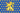

欧洲大陆（European regions，欧洲各区域）[1]区域是欧洲的一部分。下表内容超出了 /Europa Universalis IV/history/provinces 文件的范围外，是游戏中1444年11月11日的数据。
注：欧陆风云4中的大陆、次大陆、区域和地区并不完全与现实中相符。


安纳托利亚
爱琴海群岛
| ID | 名称 | 所有者（1444） | 宗教 | 文化 | 产品 | 贸易节点 | 永久性修正 | |||
|---|---|---|---|---|---|---|---|---|---|---|
| 164 | 2 | 2 | 2 | 希腊 | 君士坦丁堡 | |||||
| 320 | 4 | 4 | 3 | 希腊 | 君士坦丁堡 | |||||
| 2348 | 2 | 2 | 1 | 希腊 | 君士坦丁堡 | |||||
| 3003 | 3 | 3 | 2 | 希腊 | 君士坦丁堡 | |||||
| 4700 | 2 | 2 | 1 | 希腊 | 君士坦丁堡 |
安卡拉
| ID | 名称 | 所有者（1444） | 宗教 | 文化 | 产品 | 贸易节点 | 永久性修正 | |||
|---|---|---|---|---|---|---|---|---|---|---|
| 326 | 3 | 3 | 3 | 土耳其 | 君士坦丁堡 | |||||
| 4312 | 4 | 4 | 2 | 土耳其 | 君士坦丁堡 | |||||
| 4313 | 2 | 2 | 1 | 土耳其 | 君士坦丁堡 |
艾登
| ID | 名称 | 所有者（1444） | 宗教 | 文化 | 产品 | 贸易节点 | 永久性修正 | |||
|---|---|---|---|---|---|---|---|---|---|---|
| 318 | 5 | 5 | 3 | 土耳其 | 君士坦丁堡 | |||||
| 319 | 3 | 3 | 3 | 土耳其 | 君士坦丁堡 | |||||
| 2297 | 4 | 4 | 3 | 土耳其 | 君士坦丁堡 | |||||
| 2298 | 3 | 3 | 2 | 土耳其 | 君士坦丁堡 | |||||
| 4309 | 2 | 2 | 2 | 土耳其 | 君士坦丁堡 |
丘库罗瓦
| ID | 名称 | 所有者（1444） | 宗教 | 文化 | 产品 | 贸易节点 | 永久性修正 | |||
|---|---|---|---|---|---|---|---|---|---|---|
| 321 | 6 | 6 | 3 | 希腊 | 阿勒颇 | |||||
| 327 | 3 | 3 | 4 | 土耳其 | 阿勒颇 | |||||
| 2302 | 2 | 2 | 2 | 土耳其 | 阿勒颇 |
杜勒卡迪尔
| ID | 名称 | 所有者（1444） | 宗教 | 文化 | 产品 | 贸易节点 | 永久性修正 | |||
|---|---|---|---|---|---|---|---|---|---|---|
| 332 | 3 | 3 | 4 | 土耳其 | 阿勒颇 | |||||
| 2303 | 3 | 3 | 4 | 土耳其 | 阿勒颇 | |||||
| 2308 | 3 | 3 | 2 | 库尔德 | 阿勒颇 | |||||
| 4310 | 2 | 2 | 2 | 土耳其 | 阿勒颇 |
埃尔祖鲁姆
| ID | 名称 | 所有者（1444） | 宗教 | 文化 | 产品 | 贸易节点 | 永久性修正 | |||
|---|---|---|---|---|---|---|---|---|---|---|
| 330 | 4 | 4 | 4 | 本都 | 克里米亚 | |||||
| 331 | 4 | 4 | 4 | 亚美尼亚 | 克里米亚 | |||||
| 2305 | 3 | 3 | 2 | 亚美尼亚 | 克里米亚 |
格尔米扬
| ID | 名称 | 所有者（1444） | 宗教 | 文化 | 产品 | 贸易节点 | 永久性修正 | |||
|---|---|---|---|---|---|---|---|---|---|---|
| 322 | 5 | 5 | 4 | 土耳其 | 君士坦丁堡 | |||||
| 1848 | 5 | 5 | 4 | 土耳其 | 君士坦丁堡 | |||||
| 4308 | 2 | 3 | 1 | 土耳其 | 君士坦丁堡 | |||||
| 4311 | 2 | 2 | 2 | 土耳其 | 君士坦丁堡 |
许达文迪加尔
| ID | 名称 | 所有者（1444） | 宗教 | 文化 | 产品 | 贸易节点 | 永久性修正 | |||
|---|---|---|---|---|---|---|---|---|---|---|
| 316 | 4 | 4 | 3 | 土耳其 | 君士坦丁堡 | |||||
| 317 | 7 | 7 | 4 | 土耳其 | 君士坦丁堡 | |||||
| 2296 | 4 | 4 | 3 | 土耳其 | 君士坦丁堡 |
卡斯塔莫努
| ID | 名称 | 所有者（1444） | 宗教 | 文化 | 产品 | 贸易节点 | 永久性修正 | |||
|---|---|---|---|---|---|---|---|---|---|---|
| 325 | 3 | 3 | 3 | 土耳其 | 君士坦丁堡 | |||||
| 328 | 3 | 3 | 2 | 土耳其 | 君士坦丁堡 | |||||
| 2299 | 3 | 3 | 2 | 土耳其 | 君士坦丁堡 | |||||
| 2304 | 3 | 3 | 3 | 土耳其 | 君士坦丁堡 |
卡拉曼
| ID | 名称 | 所有者（1444） | 宗教 | 文化 | 产品 | 贸易节点 | 永久性修正 | |||
|---|---|---|---|---|---|---|---|---|---|---|
| 323 | 3 | 3 | 3 | 土耳其 | 阿勒颇 | |||||
| 324 | 6 | 6 | 5 | 土耳其 | 阿勒颇 | |||||
| 2301 | 3 | 3 | 3 | 土耳其 | 阿勒颇 | |||||
| 4307 | 2 | 2 | 2 | 土耳其 | 阿勒颇 |
罗姆
| ID | 名称 | 所有者（1444） | 宗教 | 文化 | 产品 | 贸易节点 | 永久性修正 | |||
|---|---|---|---|---|---|---|---|---|---|---|
| 329 | 5 | 5 | 4 | 土耳其 | 君士坦丁堡 | |||||
| 1846 | 5 | 5 | 4 | 土耳其 | 君士坦丁堡 | |||||
| 2300 | 3 | 3 | 2 | 土耳其 | 君士坦丁堡 | |||||
| 4314 | 2 | 2 | 2 | 土耳其 | 君士坦丁堡 | |||||
| 4315 | 3 | 3 | 2 | 土耳其 | 君士坦丁堡 |
巴尔干
阿尔巴尼亚
| ID | 名称 | 所有者（1444） | 宗教 | 文化 | 产品 | 贸易节点 | 永久性修正 | |||
|---|---|---|---|---|---|---|---|---|---|---|
| 143 | 2 | 1 | 1 | 阿尔巴尼亚 | 拉古萨 | |||||
| 4174 | 2 | 2 | 1 | 阿尔巴尼亚 | 拉古萨 | |||||
| 4175 | 2 | 2 | 2 | 阿尔巴尼亚 | 拉古萨 | |||||
| 4750 | 2 | 2 | 1 | 阿尔巴尼亚 | 拉古萨 |
波斯尼亚
| ID | 名称 | 所有者（1444） | 宗教 | 文化 | 产品 | 贸易节点 | 永久性修正 | |||
|---|---|---|---|---|---|---|---|---|---|---|
| 139 | 3 | 3 | 2 | 波斯尼亚 | 拉古萨 | |||||
| 140 | 3 | 3 | 1 | 波斯尼亚 | 拉古萨 | |||||
| 1831 | 2 | 3 | 2 | 波斯尼亚 | 拉古萨 | |||||
| 3002 | 2 | 2 | 1 | 波斯尼亚 | 拉古萨 | |||||
| 4755 | 2 | 2 | 1 | 波斯尼亚 | 拉古萨 |
保加利亚
| ID | 名称 | 所有者（1444） | 宗教 | 文化 | 产品 | 贸易节点 | 永久性修正 | |||
|---|---|---|---|---|---|---|---|---|---|---|
| 150 | 2 | 4 | 2 | 保加利亚 | 君士坦丁堡 | |||||
| 1765 | 4 | 4 | 2 | 保加利亚 | 君士坦丁堡 | |||||
| 2746 | 2 | 3 | 1 | 保加利亚 | 君士坦丁堡 | |||||
| 2750 | 3 | 3 | 3 | 保加利亚 | 君士坦丁堡 | |||||
| 4703 | 2 | 2 | 2 | 保加利亚 | 君士坦丁堡 |
克罗地亚
| ID | 名称 | 所有者（1444） | 宗教 | 文化 | 产品 | 贸易节点 | 永久性修正 | |||
|---|---|---|---|---|---|---|---|---|---|---|
| 131 | 3 | 3 | 1 | 克罗地亚 | 拉古萨 | |||||
| 1826 | 3 | 2 | 1 | 克罗地亚 | 拉古萨 | |||||
| 1828 | 2 | 2 | 1 | 波斯尼亚 | 拉古萨 | |||||
| 4752 | 4 | 4 | 2 | 克罗地亚 | 拉古萨 |
达尔马提亚
| ID | 名称 | 所有者（1444） | 宗教 | 文化 | 产品 | 贸易节点 | 永久性修正 | |||
|---|---|---|---|---|---|---|---|---|---|---|
| 136 | 4 | 3 | 2 | 克罗地亚 | 拉古萨 | |||||
| 137 | 5 | 6 | 3 | 克罗地亚 | 拉古萨 | |||||
| 4753 | 3 | 2 | 2 | 克罗地亚 | 拉古萨 |
马其顿
| ID | 名称 | 所有者（1444） | 宗教 | 文化 | 产品 | 贸易节点 | 永久性修正 | |||
|---|---|---|---|---|---|---|---|---|---|---|
| 148 | 4 | 4 | 2 | 希腊 | 拉古萨 | |||||
| 1853 | 3 | 2 | 2 | 希腊 | 拉古萨 | |||||
| 3001 | 2 | 4 | 2 | 塞尔维亚 | 拉古萨 | |||||
| 4702 | 2 | 2 | 2 | 希腊 | 拉古萨 | |||||
| 4780 | 2 | 2 | 2 | 塞尔维亚 | 拉古萨 |
摩里亚
| ID | 名称 | 所有者（1444） | 宗教 | 文化 | 产品 | 贸易节点 | 永久性修正 | |||
|---|---|---|---|---|---|---|---|---|---|---|
| 145 | 3 | 2 | 1 | 希腊 | 拉古萨 | |||||
| 146 | 4 | 4 | 3 | 希腊 | 拉古萨 | |||||
| 163 | 5 | 5 | 3 | 希腊 | 拉古萨 | |||||
| 1773 | 2 | 3 | 1 | 希腊 | 拉古萨 | |||||
| 4701 | 2 | 2 | 2 | 希腊 | 拉古萨 |
希腊北部
| ID | 名称 | 所有者（1444） | 宗教 | 文化 | 产品 | 贸易节点 | 永久性修正 | |||
|---|---|---|---|---|---|---|---|---|---|---|
| 142 | 2 | 1 | 3 | 希腊 | 拉古萨 | |||||
| 144 | 2 | 1 | 1 | 希腊 | 拉古萨 | |||||
| 147 | 5 | 5 | 2 | 希腊 | 拉古萨 | |||||
| 4698 | 2 | 1 | 2 | 希腊 | 拉古萨 | |||||
| 4699 | 3 | 2 | 1 | 希腊 | 拉古萨 |
拉什卡
| ID | 名称 | 所有者（1444） | 宗教 | 文化 | 产品 | 贸易节点 | 永久性修正 | |||
|---|---|---|---|---|---|---|---|---|---|---|
| 138 | 2 | 2 | 1 | 塞尔维亚 | 拉古萨 | |||||
| 1766 | 3 | 3 | 2 | 塞尔维亚 | 拉古萨 | |||||
| 1827 | 3 | 3 | 1 | 塞尔维亚 | 拉古萨 | |||||
| 4754 | 3 | 3 | 1 | 塞尔维亚 | 拉古萨 |
塞尔维亚
| ID | 名称 | 所有者（1444） | 宗教 | 文化 | 产品 | 贸易节点 | 永久性修正 | |||
|---|---|---|---|---|---|---|---|---|---|---|
| 141 | 3 | 3 | 2 | 塞尔维亚 | 拉古萨 | |||||
| 3000 | 3 | 3 | 1 | 塞尔维亚 | 拉古萨 | |||||
| 4176 | 3 | 3 | 1 | 塞尔维亚 | 拉古萨 | |||||
| 4239 | 4 | 4 | 2 | 塞尔维亚 | 拉古萨 | 内陆贸易中心 | ||||
| 4239 | 2 | 2 | 1 | 塞尔维亚 | 拉古萨 |
锡利斯特拉
| ID | 名称 | 所有者（1444） | 宗教 | 文化 | 产品 | 贸易节点 | 永久性修正 | |||
|---|---|---|---|---|---|---|---|---|---|---|
| 159 | 2 | 2 | 2 | 保加利亚 | 君士坦丁堡 | |||||
| 4704 | 3 | 3 | 3 | 保加利亚 | 君士坦丁堡 | |||||
| 4706 | 2 | 2 | 1 | 保加利亚 | 君士坦丁堡 |
斯拉沃尼亚
| ID | 名称 | 所有者（1444） | 宗教 | 文化 | 产品 | 贸易节点 | 永久性修正 | |||
|---|---|---|---|---|---|---|---|---|---|---|
| 152 | 3 | 2 | 1 | 克罗地亚 | 佩斯 | |||||
| 1767 | 2 | 2 | 2 | 克罗地亚 | 佩斯 | |||||
| 4173 | 2 | 2 | 1 | 塞尔维亚 | 佩斯 | |||||
| 4756 | 2 | 3 | 1 | 克罗地亚 | 佩斯 |
色雷斯
| ID | 名称 | 所有者（1444） | 宗教 | 文化 | 产品 | 贸易节点 | 永久性修正 | |||
|---|---|---|---|---|---|---|---|---|---|---|
| 149 | 6 | 5 | 3 | 希腊 | 君士坦丁堡 | |||||
| 151 | 8 | 8 | 4 | 希腊 | 君士坦丁堡 | |||||
| 1764 | 2 | 2 | 1 | 保加利亚 | 君士坦丁堡 | |||||
| 4705 | 2 | 1 | 3 | 希腊 | 君士坦丁堡 | |||||
| 4779 | 2 | 1 | 3 | 希腊 | 君士坦丁堡 |
波罗的海
奥克施泰提亚
| ID | 名称 | 所有者（1444） | 宗教 | 文化 | 产品 | 贸易节点 | 永久性修正 | |||
|---|---|---|---|---|---|---|---|---|---|---|
| 272 | 5 | 5 | 3 | 立陶宛 | 基辅 | |||||
| 770 | 3 | 3 | 2 | 立陶宛 | 基辅 | |||||
| 4535 | 2 | 2 | 2 | 立陶宛 | 基辅 | |||||
| 4536 | 2 | 2 | 2 | 立陶宛 | 基辅 |
库尔兰
| ID | 名称 | 所有者（1444） | 宗教 | 文化 | 产品 | 贸易节点 | 永久性修正 | |||
|---|---|---|---|---|---|---|---|---|---|---|
| 35 | 1 | 1 | 1 | 爱沙尼亚 | 波罗的海 | |||||
| 39 | 3 | 3 | 1 | 拉脱维亚 | 波罗的海 | |||||
| 1935 | 2 | 2 | 2 | 拉脱维亚 | 波罗的海 |
东普鲁士
| ID | 名称 | 所有者（1444） | 宗教 | 文化 | 产品 | 贸易节点 | 永久性修正 | |||
|---|---|---|---|---|---|---|---|---|---|---|
| 40 | 3 | 3 | 3 | 立陶宛 | 波罗的海 | |||||
| 41 | 5 | 5 | 3 | 普鲁士 | 波罗的海 | |||||
| 42 | 3 | 3 | 2 | 普鲁士 | 波罗的海 | |||||
| 767 | 2 | 2 | 2 | 普鲁士 | 波罗的海 | |||||
| 2958 | 2 | 2 | 1 | 普鲁士 | 波罗的海 |
爱沙尼亚
| ID | 名称 | 所有者（1444） | 宗教 | 文化 | 产品 | 贸易节点 | 永久性修正 | |||
|---|---|---|---|---|---|---|---|---|---|---|
| 36 | 4 | 4 | 2 | 爱沙尼亚 | 波罗的海 | |||||
| 1834 | 3 | 3 | 2 | 爱沙尼亚 | 波罗的海 | |||||
| 1842 | 2 | 2 | 1 | 爱沙尼亚 | 波罗的海 |
利沃尼亚
| ID | 名称 | 所有者（1444） | 宗教 | 文化 | 产品 | 贸易节点 | 永久性修正 | |||
|---|---|---|---|---|---|---|---|---|---|---|
| 37 | 3 | 3 | 2 | 拉脱维亚 | 波罗的海 | |||||
| 38 | 5 | 5 | 1 | 普鲁士 | 波罗的海 | |||||
| 273 | 2 | 2 | 1 | 拉脱维亚 | 波罗的海 | |||||
| 4241 | 2 | 2 | 2 | 拉脱维亚 | 波罗的海 |
萨莫吉希亚
| ID | 名称 | 所有者（1444） | 宗教 | 文化 | 产品 | 贸易节点 | 永久性修正 | |||
|---|---|---|---|---|---|---|---|---|---|---|
| 270 | 3 | 3 | 2 | 立陶宛 | 波罗的海 | |||||
| 271 | 2 | 2 | 2 | 立陶宛 | 波罗的海 | |||||
| 1936 | 3 | 3 | 1 | 立陶宛 | 波罗的海 | |||||
| 4534 | 2 | 1 | 1 | 立陶宛 | 波罗的海 |
西普鲁士
| ID | 名称 | 所有者（1444） | 宗教 | 文化 | 产品 | 贸易节点 | 永久性修正 | |||
|---|---|---|---|---|---|---|---|---|---|---|
| 43 | 7 | 7 | 2 | 普鲁士 | 波罗的海 | 维斯杜拉河口，沿海贸易中心 | ||||
| 1841 | 4 | 4 | 3 | 普鲁士 | 波罗的海 | |||||
| 2997 | 3 | 4 | 3 | 普鲁士 | 波罗的海 |
不列颠诸岛
康诺特
| ID | 名称 | 所有者（1444） | 宗教 | 文化 | 产品 | 贸易节点 | 永久性修正 | |||
|---|---|---|---|---|---|---|---|---|---|---|
| 375 | 3 | 3 | 2 | 爱尔兰 | 北海 | |||||
| 376 | 2 | 2 | 2 | 爱尔兰 | 北海 | |||||
| 4119 | 3 | 3 | 2 | 爱尔兰 | 北海 |
东盎格利亚
| ID | 名称 | 所有者（1444） | 宗教 | 文化 | 产品 | 贸易节点 | 永久性修正 | |||
|---|---|---|---|---|---|---|---|---|---|---|
| 238 | 英格兰 | 6 | 6 | 2 | 英吉利 | 英吉利海峡 | ||||
| 1860 | 英格兰 | 4 | 4 | 2 | 英吉利 | 英吉利海峡 | ||||
| 4370 | 英格兰 | 3 | 3 | 2 | 英吉利 | 英吉利海峡 |
东米德兰兹
| ID | 名称 | 所有者（1444） | 宗教 | 文化 | 产品 | 贸易节点 | 永久性修正 | |||
|---|---|---|---|---|---|---|---|---|---|---|
| 243 | 英格兰 | 3 | 3 | 2 | 英吉利 | 英吉利海峡 | ||||
| 1861 | 英格兰 | 2 | 2 | 2 | 英吉利 | 英吉利海峡 | ||||
| 4376 | 英格兰 | 2 | 2 | 2 | 英吉利 | 英吉利海峡 |
苏格兰高地
| ID | 名称 | 所有者（1444） | 宗教 | 文化 | 产品 | 贸易节点 | 永久性修正 | |||
|---|---|---|---|---|---|---|---|---|---|---|
| 250 | 3 | 3 | 4 | 高地苏格兰 | 北海 | |||||
| 252 | 2 | 2 | 3 | 高地苏格兰 | 北海 | |||||
| 369 | 1 | 1 | 1 | 挪威 | 北海 | |||||
| 4110 | 2 | 2 | 2 | 高地苏格兰 | 北海 | |||||
| 4363 | 3 | 3 | 2 | 高地苏格兰 | 北海 |
伦斯特
| ID | 名称 | 所有者（1444） | 宗教 | 文化 | 产品 | 贸易节点 | 永久性修正 | |||
|---|---|---|---|---|---|---|---|---|---|---|
| 373 | 英格兰 | 3 | 3 | 2 | 爱尔兰 | 北海 | ||||
| 374 | 2 | 2 | 2 | 爱尔兰 | 北海 | |||||
| 4120 | 3 | 3 | 3 | 爱尔兰 | 北海 | |||||
| 4379 | 2 | 2 | 1 | 爱尔兰 | 北海 |
伦敦
| ID | 名称 | 所有者（1444） | 宗教 | 文化 | 产品 | 贸易节点 | 永久性修正 | |||
|---|---|---|---|---|---|---|---|---|---|---|
| 235 | 英格兰 | 5 | 5 | 2 | 英吉利 | 英吉利海峡 | ||||
| 236 | 英格兰 | 7 | 7 | 6 | 英吉利 | 英吉利海峡 | 泰晤士河河口，沿海贸易中心 | |||
| 237 | 英格兰 | 4 | 4 | 2 | 英吉利 | 英吉利海峡 | ||||
| 4371 | 英格兰 | 4 | 4 | 2 | 英吉利 | 英吉利海峡 |
苏格兰低地
| ID | 名称 | 所有者（1444） | 宗教 | 文化 | 产品 | 贸易节点 | 永久性修正 | |||
|---|---|---|---|---|---|---|---|---|---|---|
| 248 | 6 | 6 | 4 | 苏格兰 | 北海 | 沿海贸易中心 | ||||
| 249 | 4 | 4 | 2 | 苏格兰 | 北海 | 天然良港 | ||||
| 251 | 3 | 3 | 3 | 苏格兰 | 北海 | |||||
| 4361 | 2 | 2 | 1 | 苏格兰 | 北海 | |||||
| 4362 | 3 | 3 | 2 | 苏格兰 | 北海 |
芒斯特
| ID | 名称 | 所有者（1444） | 宗教 | 文化 | 产品 | 贸易节点 | 永久性修正 | |||
|---|---|---|---|---|---|---|---|---|---|---|
| 4118 | 2 | 3 | 1 | 爱尔兰 | 北海 | |||||
| 4377 | 3 | 3 | 1 | 爱尔兰 | 北海 | |||||
| 4378 | 2 | 1 | 1 | 爱尔兰 | 北海 |
群岛地区
| ID | 名称 | 所有者（1444） | 宗教 | 文化 | 产品 | 贸易节点 | 永久性修正 | |||
|---|---|---|---|---|---|---|---|---|---|---|
| 253 | 1 | 1 | 1 | 高地苏格兰 | 北海 | |||||
| 4364 | 1 | 1 | 1 | 高地苏格兰 | 北海 | |||||
| 4365 | 英格兰 | 1 | 1 | 1 | 高地苏格兰 | 北海 |
英格兰北部
| ID | 名称 | 所有者（1444） | 宗教 | 文化 | 产品 | 贸易节点 | 永久性修正 | |||
|---|---|---|---|---|---|---|---|---|---|---|
| 244 | 英格兰 | 3 | 3 | 2 | 英吉利 | 北海 | ||||
| 246 | 英格兰 | 3 | 3 | 2 | 英吉利 | 北海 | ||||
| 247 | 英格兰 | 2 | 2 | 1 | 英吉利 | 北海 | ||||
| 4375 | 英格兰 | 2 | 2 | 1 | 英吉利 | 北海 |
乌尔斯特
| ID | 名称 | 所有者（1444） | 宗教 | 文化 | 产品 | 贸易节点 | 永久性修正 | |||
|---|---|---|---|---|---|---|---|---|---|---|
| 372 | 3 | 3 | 2 | 爱尔兰 | 北海 | |||||
| 4121 | 3 | 3 | 2 | 爱尔兰 | 北海 | |||||
| 4380 | 2 | 2 | 1 | 爱尔兰 | 北海 |
威尔士
| ID | 名称 | 所有者（1444） | 宗教 | 文化 | 产品 | 贸易节点 | 永久性修正 | |||
|---|---|---|---|---|---|---|---|---|---|---|
| 241 | 英格兰 | 2 | 2 | 1 | 威尔士 | 英吉利海峡 | ||||
| 242 | 英格兰 | 2 | 2 | 1 | 威尔士 | 英吉利海峡 | ||||
| 4366 | 英格兰 | 1 | 1 | 1 | 威尔士 | 英吉利海峡 | ||||
| 4369 | 英格兰 | 1 | 1 | 1 | 威尔士 | 英吉利海峡 |
威塞克斯
| ID | 名称 | 所有者（1444） | 宗教 | 文化 | 产品 | 贸易节点 | 永久性修正 | |||
|---|---|---|---|---|---|---|---|---|---|---|
| 233 | 英格兰 | 1 | 1 | 1 | 威尔士 | 英吉利海峡 | ||||
| 234 | 英格兰 | 3 | 3 | 3 | 英吉利 | 英吉利海峡 | ||||
| 4130 | 英格兰 | 2 | 2 | 1 | 英吉利 | 英吉利海峡 | ||||
| 4373 | 英格兰 | 2 | 2 | 2 | 英吉利 | 英吉利海峡 | ||||
| 4374 | 英格兰 | 2 | 3 | 1 | 英吉利 | 英吉利海峡 |
西米德兰兹
| ID | 名称 | 所有者（1444） | 宗教 | 文化 | 产品 | 贸易节点 | 永久性修正 | |||
|---|---|---|---|---|---|---|---|---|---|---|
| 239 | 英格兰 | 2 | 2 | 2 | 英吉利 | 英吉利海峡 | ||||
| 240 | 英格兰 | 3 | 3 | 2 | 英吉利 | 英吉利海峡 | ||||
| 4372 | 英格兰 | 3 | 3 | 2 | 英吉利 | 英吉利海峡 |
约克
| ID | 名称 | 所有者（1444） | 宗教 | 文化 | 产品 | 贸易节点 | 永久性修正 | |||
|---|---|---|---|---|---|---|---|---|---|---|
| 245 | 英格兰 | 3 | 3 | 2 | 英吉利 | 英吉利海峡 | ||||
| 4367 | 英格兰 | 3 | 3 | 1 | 英吉利 | 英吉利海峡 | ||||
| 4368 | 英格兰 | 2 | 2 | 1 | 英吉利 | 英吉利海峡 | ||||
| 4785 | 英格兰 | 2 | 2 | 1 | 英吉利 | 英吉利海峡 |
卡帕提亚
匈牙利大平原
| ID | 名称 | 所有者（1444） | 宗教 | 文化 | 产品 | 贸易节点 | 永久性修正 | |||
|---|---|---|---|---|---|---|---|---|---|---|
| 155 | 2 | 2 | 2 | 匈牙利 | 佩斯 | |||||
| 1953 | 3 | 3 | 2 | 匈牙利 | 佩斯 | |||||
| 1954 | 3 | 3 | 2 | 匈牙利 | 佩斯 | |||||
| 4125 | 3 | 3 | 2 | 匈牙利 | 佩斯 |
摩尔达维亚
| ID | 名称 | 所有者（1444） | 宗教 | 文化 | 产品 | 贸易节点 | 永久性修正 | |||
|---|---|---|---|---|---|---|---|---|---|---|
| 268 | 5 | 4 | 2 | 罗马尼亚 | 克里米亚 | |||||
| 1756 | 5 | 4 | 2 | 罗马尼亚 | 克里米亚 | |||||
| 2405 | 3 | 2 | 2 | 罗马尼亚 | 克里米亚 | |||||
| 4529 | 2 | 2 | 2 | 罗马尼亚 | 克里米亚 | |||||
| 4530 | 2 | 1 | 1 | 罗马尼亚 | 克里米亚 |
北特兰西瓦尼亚
| ID | 名称 | 所有者（1444） | 宗教 | 文化 | 产品 | 贸易节点 | 永久性修正 | |||
|---|---|---|---|---|---|---|---|---|---|---|
| 157 | 2 | 2 | 1 | 特兰西瓦尼亚 | 佩斯 | |||||
| 158 | 3 | 3 | 2 | 特兰西瓦尼亚 | 佩斯 | |||||
| 1952 | 2 | 2 | 1 | 鲁塞尼亚 | 佩斯 | |||||
| 4127 | 2 | 2 | 2 | 特兰西瓦尼亚 | 佩斯 |
斯洛伐克
| ID | 名称 | 所有者（1444） | 宗教 | 文化 | 产品 | 贸易节点 | 永久性修正 | |||
|---|---|---|---|---|---|---|---|---|---|---|
| 154 | 3 | 3 | 2 | 斯洛伐克 | 佩斯 | |||||
| 162 | 3 | 2 | 2 | 斯洛伐克 | 佩斯 | |||||
| 1318 | 3 | 4 | 2 | 斯洛伐克 | 佩斯 | |||||
| 1772 | 5 | 5 | 3 | 斯洛伐克 | 佩斯 | |||||
| 4236 | 2 | 3 | 1 | 斯洛伐克 | 佩斯 |
南特兰西瓦尼亚
| ID | 名称 | 所有者（1444） | 宗教 | 文化 | 产品 | 贸易节点 | 永久性修正 | |||
|---|---|---|---|---|---|---|---|---|---|---|
| 156 | 3 | 3 | 2 | 特兰西瓦尼亚 | 佩斯 | |||||
| 1951 | 3 | 3 | 2 | 特兰西瓦尼亚 | 佩斯 | |||||
| 4128 | 3 | 3 | 2 | 特兰西瓦尼亚 | 佩斯 |
外多瑙
| ID | 名称 | 所有者（1444） | 宗教 | 文化 | 产品 | 贸易节点 | 永久性修正 | |||
|---|---|---|---|---|---|---|---|---|---|---|
| 135 | 3 | 3 | 2 | 匈牙利 | 佩斯 | |||||
| 153 | 5 | 4 | 2 | 匈牙利 | 佩斯 | 市镇 | ||||
| 1864 | 3 | 3 | 2 | 匈牙利 | 佩斯 | |||||
| 4126 | 2 | 2 | 1 | 匈牙利 | 佩斯 | |||||
| 4240 | 3 | 3 | 2 | 匈牙利 | 佩斯 |
瓦拉几亚
| ID | 名称 | 所有者（1444） | 宗教 | 文化 | 产品 | 贸易节点 | 永久性修正 | |||
|---|---|---|---|---|---|---|---|---|---|---|
| 160 | 3 | 3 | 2 | 罗马尼亚 | 佩斯 | |||||
| 161 | 5 | 5 | 3 | 罗马尼亚 | 佩斯 | |||||
| 2998 | 4 | 4 | 2 | 罗马尼亚 | 佩斯 | |||||
| 4531 | 3 | 3 | 2 | 罗马尼亚 | 佩斯 | |||||
| 4532 | 3 | 2 | 2 | 罗马尼亚 | 佩斯 |
高加索
亚美尼亚 和 希尔万 也属于高加索区域，但是它们的省份大部分在亚洲。
切尔卡西亚
| ID | 名称 | 所有者（1444） | 宗教 | 文化 | 产品 | 贸易节点 | 永久性修正 | |||
|---|---|---|---|---|---|---|---|---|---|---|
| 463 | 2 | 2 | 3 | 切尔克西亚 | 克里米亚 | |||||
| 2195 | 2 | 2 | 2 | 切尔克西亚 | 克里米亚 | |||||
| 2197 | 1 | 1 | 2 | 切尔克西亚 | 克里米亚 | |||||
| 2201 | 1 | 1 | 1 | 切尔克西亚 | 克里米亚 |
达吉斯坦
| ID | 名称 | 所有者（1444） | 宗教 | 文化 | 产品 | 贸易节点 | 永久性修正 | |||
|---|---|---|---|---|---|---|---|---|---|---|
| 425 | 3 | 3 | 1 | 达吉斯坦 | 阿斯特拉罕 | |||||
| 2198 | 2 | 2 | 3 | 达吉斯坦 | 阿斯特拉罕 | |||||
| 2199 | 2 | 2 | 3 | 达吉斯坦 | 阿斯特拉罕 | |||||
| 2208 | 3 | 3 | 3 | 达吉斯坦 | 阿斯特拉罕 | |||||
| 4306 | 3 | 3 | 3 | 达吉斯坦 | 阿斯特拉罕 |
伊梅列季
| ID | 名称 | 所有者（1444） | 宗教 | 文化 | 产品 | 贸易节点 | 永久性修正 | |||
|---|---|---|---|---|---|---|---|---|---|---|
| 422 | 3 | 3 | 3 | 格鲁吉亚 | 克里米亚 | |||||
| 462 | 2 | 2 | 2 | 格鲁吉亚 | 克里米亚 | 天然良港 | ||||
| 1856 | 2 | 2 | 2 | 格鲁吉亚 | 克里米亚 |
卡特利-卡赫季
| ID | 名称 | 所有者（1444） | 宗教 | 文化 | 产品 | 贸易节点 | 永久性修正 | |||
|---|---|---|---|---|---|---|---|---|---|---|
| 423 | 4 | 4 | 2 | 格鲁吉亚 | 克里米亚 | |||||
| 2203 | 3 | 3 | 3 | 格鲁吉亚 | 克里米亚 | |||||
| 4301 | 4 | 4 | 2 | 格鲁吉亚 | 克里米亚 |
萨姆茨赫
| ID | 名称 | 所有者（1444） | 宗教 | 文化 | 产品 | 贸易节点 | 永久性修正 | |||
|---|---|---|---|---|---|---|---|---|---|---|
| 2196 | 3 | 3 | 2 | 格鲁吉亚 | 克里米亚 | |||||
| 2204 | 3 | 3 | 2 | 格鲁吉亚 | 克里米亚 | |||||
| 4303 | 3 | 3 | 2 | 格鲁吉亚 | 克里米亚 |
法兰西
奥弗涅
| ID | 名称 | 所有者（1444） | 宗教 | 文化 | 产品 | 贸易节点 | 永久性修正 | |||
|---|---|---|---|---|---|---|---|---|---|---|
| 190 | 波旁 | 4 | 4 | 4 | 法兰西 | 波尔多 | ||||
| 195 | 利穆赞 | 3 | 3 | 2 | 加斯科涅 | 波尔多 | ||||
| 199 | 奥弗涅 | 4 | 4 | 2 | 欧西坦 | 波尔多 | ||||
| 4697 | 拉马尔什 | 2 | 2 | 2 | 加斯科涅 | 波尔多 | ||||
| 4777 | 福雷 | 3 | 2 | 2 | 欧西坦 | 波尔多 |
布列塔尼
| ID | 名称 | 所有者（1444） | 宗教 | 文化 | 产品 | 贸易节点 | 永久性修正 | |||
|---|---|---|---|---|---|---|---|---|---|---|
| 169 | 阿摩尔 | 4 | 4 | 4 | 布列塔尼 | 波尔多 | ||||
| 170 | 菲尼斯泰尔 | 3 | 3 | 4 | 布列塔尼 | 波尔多 | ||||
| 171 | 瓦讷 | 3 | 3 | 3 | 布列塔尼 | 波尔多 | ||||
| 172 | 南特 | 4 | 4 | 4 | 布列塔尼 | 波尔多 | ||||
| 4384 | 雷恩 | 4 | 4 | 4 | 布列塔尼 | 波尔多 |
香槟
| ID | 名称 | 所有者（1444） | 宗教 | 文化 | 产品 | 贸易节点 | 永久性修正 | |||
|---|---|---|---|---|---|---|---|---|---|---|
| 181 | 勒泰勒 | 6 | 6 | 2 | 瓦隆 | 香槟 | ||||
| 186 | 尼维内 | 6 | 6 | 4 | 法兰西 | 香槟 | 市镇 | |||
| 4390 | 特鲁瓦 | 5 | 5 | 3 | 法兰西 | 香槟 |
东勃艮第
| ID | 名称 | 所有者（1444） | 宗教 | 文化 | 产品 | 贸易节点 | 永久性修正 | |||
|---|---|---|---|---|---|---|---|---|---|---|
| 192 | 第戎 | 7 | 7 | 6 | 勃艮第 | 香槟 | 市镇 | |||
| 193 | 弗朗什孔泰 | 3 | 4 | 3 | 勃艮第 | 香槟 | ||||
| 4764 | 沙托萨兰 | 2 | 3 | 2 | 勃艮第 | 香槟 |
加斯科涅
| ID | 名称 | 所有者（1444） | 宗教 | 文化 | 产品 | 贸易节点 | 永久性修正 | |||
|---|---|---|---|---|---|---|---|---|---|---|
| 173 | 拉布尔 | 英格兰 | 3 | 3 | 4 | 巴斯克 | 波尔多 | |||
| 175 | 阿马尼亚克 | 5 | 5 | 5 | 加斯科涅 | 波尔多 | ||||
| 176 | 贝阿恩 | 4 | 4 | 4 | 加斯科涅 | 波尔多 | ||||
| 4694 | 富瓦 | 2 | 2 | 2 | 加斯科涅 | 波尔多 |
吉耶那
| ID | 名称 | 所有者（1444） | 宗教 | 文化 | 产品 | 贸易节点 | 永久性修正 | |||
|---|---|---|---|---|---|---|---|---|---|---|
| 174 | 波尔多 | 英格兰 | 8 | 8 | 5 | 加斯科涅 | 波尔多 | |||
| 194 | 佩里戈尔 | 3 | 3 | 3 | 加斯科涅 | 波尔多 | ||||
| 198 | 鲁埃格 | 3 | 3 | 2 | 欧西坦 | 波尔多 | ||||
| 4112 | 凯尔西 | 3 | 3 | 3 | 加斯科涅 | 波尔多 |
法兰西岛
| ID | 名称 | 所有者（1444） | 宗教 | 文化 | 产品 | 贸易节点 | 永久性修正 | |||
|---|---|---|---|---|---|---|---|---|---|---|
| 182 | 瓦卢瓦 | 5 | 5 | 4 | 法兰西 | 香槟 | ||||
| 183 | 巴黎 | 8 | 8 | 7 | 法兰西 | 香槟 | ||||
| 185 | 讷穆尔 | 5 | 5 | 5 | 法兰西 | 香槟 | ||||
| 4388 | 沙特尔 | 5 | 5 | 6 | 法兰西 | 香槟 |
朗格多克
| ID | 名称 | 所有者（1444） | 宗教 | 文化 | 产品 | 贸易节点 | 永久性修正 | |||
|---|---|---|---|---|---|---|---|---|---|---|
| 196 | 图卢兹 | 5 | 5 | 5 | 欧西坦 | 瓦伦西亚 | ||||
| 200 | 蒙彼利埃 | 6 | 5 | 5 | 欧西坦 | 瓦伦西亚 | ||||
| 2753 | 纳博讷 | 5 | 5 | 3 | 欧西坦 | 瓦伦西亚 | ||||
| 4391 | 维瓦赖 | 4 | 4 | 2 | 欧西坦 | 瓦伦西亚 | ||||
| 4695 | 卡尔卡松 | 3 | 2 | 2 | 欧西坦 | 瓦伦西亚 |
卢瓦尔河谷
| ID | 名称 | 所有者（1444） | 宗教 | 文化 | 产品 | 贸易节点 | 永久性修正 | |||
|---|---|---|---|---|---|---|---|---|---|---|
| 177 | 曼恩 | 英格兰 | 6 | 6 | 4 | 法兰西 | 波尔多 | |||
| 178 | 安茹 | 5 | 5 | 5 | 法兰西 | 波尔多 | ||||
| 4389 | 图赖讷 | 4 | 4 | 3 | 法兰西 | 波尔多 |
洛林
| ID | 名称 | 所有者（1444） | 宗教 | 文化 | 产品 | 贸易节点 | 永久性修正 | |||
|---|---|---|---|---|---|---|---|---|---|---|
| 187 | 巴鲁瓦 | 3 | 4 | 3 | 勃艮第 | 香槟 | ||||
| 188 | 梅斯 | 6 | 6 | 5 | 勃艮第 | 香槟 | ||||
| 189 | 洛林根 | 5 | 5 | 5 | 勃艮第 | 香槟 | ||||
| 4766 | 凡尔登 | 3 | 3 | 3 | 勃艮第 | 香槟 |
诺曼底
| ID | 名称 | 所有者（1444） | 宗教 | 文化 | 产品 | 贸易节点 | 永久性修正 | |||
|---|---|---|---|---|---|---|---|---|---|---|
| 167 | 科 | 英格兰 | 4 | 4 | 4 | 诺曼 | 英吉利海峡 | |||
| 168 | 卡昂 | 英格兰 | 4 | 4 | 4 | 诺曼 | 英吉利海峡 | |||
| 1879 | 阿朗松 | 英格兰 | 4 | 4 | 3 | 法兰西 | 英吉利海峡 | |||
| 4385 | 科唐坦 | 英格兰 | 4 | 4 | 2 | 诺曼 | 英吉利海峡 |
奥尔良
| ID | 名称 | 所有者（1444） | 宗教 | 文化 | 产品 | 贸易节点 | 永久性修正 | |||
|---|---|---|---|---|---|---|---|---|---|---|
| 179 | 贝里 | 4 | 4 | 4 | 法兰西 | 香槟 | ||||
| 184 | 奥尔良 | 6 | 6 | 5 | 法兰西 | 香槟 | ||||
| 4776 | 布卢瓦 | 4 | 4 | 3 | 法兰西 | 香槟 |
皮卡第
| ID | 名称 | 所有者（1444） | 宗教 | 文化 | 产品 | 贸易节点 | 永久性修正 | |||
|---|---|---|---|---|---|---|---|---|---|---|
| 87 | 加来 | 英格兰 | 5 | 5 | 3 | 瓦隆 | 英吉利海峡 | |||
| 88 | 阿图瓦 | 6 | 6 | 3 | 瓦隆 | 英吉利海峡 | ||||
| 89 | 皮卡第 | 6 | 6 | 5 | 法兰西 | 英吉利海峡 | ||||
| 1743 | 坎布赖 | 5 | 5 | 2 | 瓦隆 | 英吉利海峡 |
普瓦图
| ID | 名称 | 所有者（1444） | 宗教 | 文化 | 产品 | 贸易节点 | 永久性修正 | |||
|---|---|---|---|---|---|---|---|---|---|---|
| 180 | 上普瓦图 | 4 | 4 | 4 | 法兰西 | 波尔多 | ||||
| 4111 | 桑通日 | 4 | 4 | 2 | 法兰西 | 波尔多 | ||||
| 4386 | 下普瓦图 | 3 | 3 | 3 | 法兰西 | 波尔多 | ||||
| 4387 | 昂古莱姆 | 3 | 3 | 2 | 法兰西 | 波尔多 |
普罗旺斯
| ID | 名称 | 所有者（1444） | 宗教 | 文化 | 产品 | 贸易节点 | 永久性修正 | |||
|---|---|---|---|---|---|---|---|---|---|---|
| 201 | 艾克斯 | 7 | 7 | 6 | 欧西坦 | 热那亚 | ||||
| 202 | 阿维尼翁 | 4 | 3 | 4 | 欧西坦 | 热那亚 | ||||
| 2991 | 福卡尔基耶 | 3 | 3 | 2 | 欧西坦 | 热那亚 | ||||
| 4696 | 土伦 | 4 | 4 | 3 | 欧西坦 | 热那亚 |
萨伏伊
| ID | 名称 | 所有者（1444） | 宗教 | 文化 | 产品 | 贸易节点 | 永久性修正 | |||
|---|---|---|---|---|---|---|---|---|---|---|
| 203 | 里昂 | 6 | 6 | 6 | 欧西坦 | 香槟 | 市镇 | |||
| 204 | 道芬 | 4 | 3 | 3 | 欧西坦 | 香槟 | ||||
| 205 | 羌贝里 | 6 | 6 | 3 | 欧西坦 | 香槟 | ||||
| 4719 | 布雷斯 | 3 | 2 | 2 | 欧西坦 | 香槟 |
西勃艮第
| ID | 名称 | 所有者（1444） | 宗教 | 文化 | 产品 | 贸易节点 | 永久性修正 | |||
|---|---|---|---|---|---|---|---|---|---|---|
| 191 | 讷韦尔 | 5 | 5 | 3 | 勃艮第 | 香槟 | ||||
| 1877 | 夏洛莱 | 4 | 4 | 3 | 勃艮第 | 香槟 | ||||
| 4392 | 欧塞尔 | 4 | 4 | 3 | 勃艮第 | 香槟 |
伊比利亚
阿连特茹
| ID | 名称 | 所有者（1444） | 宗教 | 文化 | 产品 | 贸易节点 | 永久性修正 | |||
|---|---|---|---|---|---|---|---|---|---|---|
| 227 | 里斯本 | 6 | 7 | 3 | 葡萄牙 | 塞维利亚 | 沿海贸易中心 | |||
| 229 | 贝雅 | 3 | 3 | 3 | 葡萄牙 | 塞维利亚 | ||||
| 230 | 阿尔加维 | 3 | 3 | 2 | 葡萄牙 | 塞维利亚 | ||||
| 4150 | 埃武拉 | 3 | 2 | 2 | 葡萄牙 | 塞维利亚 | ||||
| 4787 | 里巴特茹 | 4 | 3 | 3 | 葡萄牙 | 塞维利亚 |
阿拉贡
| ID | 名称 | 所有者（1444） | 宗教 | 文化 | 产品 | 贸易节点 | 永久性修正 | |||
|---|---|---|---|---|---|---|---|---|---|---|
| 211 | 韦斯卡 | 3 | 2 | 2 | 阿拉贡 | 瓦伦西亚 | ||||
| 214 | 萨拉戈萨 | 5 | 5 | 3 | 阿拉贡 | 瓦伦西亚 | ||||
| 2990 | 特鲁埃尔 | 3 | 3 | 3 | 阿拉贡 | 瓦伦西亚 | ||||
| 4557 | 卡拉塔尤德 | 3 | 2 | 2 | 阿拉贡 | 瓦伦西亚 |
阿斯图里亚斯
| ID | 名称 | 所有者（1444） | 宗教 | 文化 | 产品 | 贸易节点 | 永久性修正
- | |||
|---|---|---|---|---|---|---|---|---|---|---|
| 207 | 阿斯图里亚斯 | 4 | 4 | 3 | 莱昂 | 塞维利亚 | ||||
| 1745 | 坎塔布里亚 | 3 | 3 | 3 | 卡斯蒂利亚 | 塞维利亚 | ||||
| 1746 | 布尔戈斯 | 3 | 3 | 2 | 卡斯蒂利亚 | 塞维利亚 | ||||
| 4552 | 帕伦西亚 | 2 | 2 | 2 | 卡斯蒂利亚 | 塞维利亚 |
巴利阿里
| ID | 名称 | 所有者（1444） | 宗教 | 文化 | 产品 | 贸易节点 | 永久性修正 | |||
|---|---|---|---|---|---|---|---|---|---|---|
| 333 | 马略卡 | 2 | 2 | 1 | 加泰罗尼亚 | 瓦伦西亚 | ||||
| 4559 | 梅诺卡 | 1 | 1 | 1 | 加泰罗尼亚 | 瓦伦西亚 | ||||
| 4560 | 伊维萨 | 1 | 1 | 1 | 加泰罗尼亚 | 瓦伦西亚 |
贝拉斯
| ID | 名称 | 所有者（1444） | 宗教 | 文化 | 产品 | 贸易节点 | 永久性修正 | |||
|---|---|---|---|---|---|---|---|---|---|---|
| 228 | 贝拉 | 4 | 4 | 3 | 葡萄牙 | 塞维利亚 | ||||
| 231 | 波尔图 | 7 | 7 | 5 | 葡萄牙 | 塞维利亚 | ||||
| 232 | 布拉干萨 | 5 | 5 | 2 | 葡萄牙 | 塞维利亚 | ||||
| 1851 | 科英布拉 | 4 | 4 | 3 | 葡萄牙 | 塞维利亚 | ||||
| 4556 | 阿威罗 | 4 | 4 | 2 | 葡萄牙 | 塞维利亚 |
卡斯蒂利亚
| ID | 名称 | 所有者（1444） | 宗教 | 文化 | 产品 | 贸易节点 | 永久性修正 | |||
|---|---|---|---|---|---|---|---|---|---|---|
| 215 | 巴利亚多利德 | 3 | 3 | 2 | 卡斯蒂利亚 | 塞维利亚 | ||||
| 217 | 马德里 | 5 | 5 | 5 | 卡斯蒂利亚 | 塞维利亚 | ||||
| 2755 | 索里亚 | 2 | 2 | 1 | 卡斯蒂利亚 | 塞维利亚 | ||||
| 4551 | 阿维拉 | 3 | 2 | 1 | 卡斯蒂利亚 | 塞维利亚 | ||||
| 4789 | 塞哥维亚 | 3 | 3 | 2 | 卡斯蒂利亚 | 塞维利亚 |
加泰罗尼亚
| ID | 名称 | 所有者（1444） | 宗教 | 文化 | 产品 | 贸易节点 | 永久性修正 | |||
|---|---|---|---|---|---|---|---|---|---|---|
| 197 | 鲁西荣 | 3 | 3 | 2 | 加泰罗尼亚 | 瓦伦西亚 | ||||
| 212 | 赫罗纳 | 3 | 3 | 3 | 加泰罗尼亚 | 瓦伦西亚 | ||||
| 213 | 巴塞罗那 | 6 | 5 | 3 | 加泰罗尼亚 | 瓦伦西亚 | ||||
| 2987 | 乌尔赫尔 | 3 | 3 | 2 | 加泰罗尼亚 | 瓦伦西亚 | ||||
| 2988 | 塔拉戈纳 | 3 | 2 | 2 | 加泰罗尼亚 | 瓦伦西亚 |
埃斯特雷马杜拉
| ID | 名称 | 所有者（1444） | 宗教 | 文化 | 产品 | 贸易节点 | 永久性修正 | |||
|---|---|---|---|---|---|---|---|---|---|---|
| 218 | 巴达霍斯 | 3 | 3 | 2 | 安达卢西亚 | 塞维利亚 | ||||
| 1747 | 卡塞雷斯 | 2 | 2 | 2 | 莱昂 | 塞维利亚 | ||||
| 4788 | 普拉森西亚 | 2 | 2 | 1 | 莱昂 | 塞维利亚 |
加利西亚
| ID | 名称 | 所有者（1444） | 宗教 | 文化 | 产品 | 贸易节点 | 永久性修正 | |||
|---|---|---|---|---|---|---|---|---|---|---|
| 206 | 拉科鲁尼亚 | 3 | 2 | 2 | 加利西亚 | 塞维利亚 | ||||
| 4554 | 卢戈 | 3 | 3 | 2 | 加利西亚 | 塞维利亚 | ||||
| 4555 | 蓬特韦德拉 | 3 | 3 | 2 | 加利西亚 | 塞维利亚 | ||||
| 4558 | 奥伦塞 | 2 | 2 | 1 | 加利西亚 | 塞维利亚 |
莱昂
| ID | 名称 | 所有者（1444） | 宗教 | 文化 | 产品 | 贸易节点 | 永久性修正 | |||
|---|---|---|---|---|---|---|---|---|---|---|
| 208 | 莱昂 | 4 | 4 | 2 | 莱昂 | 塞维利亚 | ||||
| 216 | 萨拉曼卡 | 4 | 4 | 4 | 莱昂 | 塞维利亚 | ||||
| 4553 | 萨莫拉 | 3 | 3 | 2 | 莱昂 | 塞维利亚 |
下安达卢西亚
| ID | 名称 | 所有者（1444） | 宗教 | 文化 | 产品 | 贸易节点 | 永久性修正 | |||
|---|---|---|---|---|---|---|---|---|---|---|
| 224 | 塞维利亚 | 6 | 6 | 4 | 安达卢西亚 | 塞维利亚 | 沿海贸易中心 | |||
| 225 | 科尔多瓦 | 4 | 4 | 2 | 安达卢西亚 | 塞维利亚 | ||||
| 1748 | 哈恩 | 3 | 4 | 2 | 安达卢西亚 | 塞维利亚 | ||||
| 1749 | 加的斯 | 5 | 4 | 3 | 安达卢西亚 | 塞维利亚 | ||||
| 4548 | 韦尔瓦 | 3 | 3 | 2 | 安达卢西亚 | 塞维利亚 |
托莱多
| ID | 名称 | 所有者（1444） | 宗教 | 文化 | 产品 | 贸易节点 | 永久性修正 | |||
|---|---|---|---|---|---|---|---|---|---|---|
| 219 | 托莱多 | 5 | 5 | 4 | 卡斯蒂利亚 | 塞维利亚 | ||||
| 221 | 穆尔西亚 | 4 | 3 | 3 | 安达卢西亚 | 塞维利亚 | ||||
| 2751 | 昆卡 | 4 | 4 | 3 | 卡斯蒂利亚 | 塞维利亚 | ||||
| 2754 | 拉曼查 | 3 | 3 | 3 | 卡斯蒂利亚 | 塞维利亚 | ||||
| 4547 | 阿尔瓦塞特 | 2 | 2 | 2 | 安达卢西亚 | 塞维利亚 |
上安达卢西亚
| ID | 名称 | 所有者（1444） | 宗教 | 文化 | 产品 | 贸易节点 | 永久性修正 | |||
|---|---|---|---|---|---|---|---|---|---|---|
| 222 | 阿尔梅里亚 | 2 | 2 | 2 | 安达卢西亚 | 塞维利亚 | ||||
| 223 | 格拉纳达 | 6 | 4 | 4 | 安达卢西亚 | 塞维利亚 | ||||
| 226 | 直布罗陀 | 1 | 1 | 1 | 安达卢西亚 | 塞维利亚 | ||||
| 4546 | 马拉加 | 3 | 3 | 1 | 安达卢西亚 | 塞维利亚 |
瓦伦西亚
| ID | 名称 | 所有者（1444） | 宗教 | 文化 | 产品 | 贸易节点 | 永久性修正 | |||
|---|---|---|---|---|---|---|---|---|---|---|
| 220 | 瓦伦西亚 | 6 | 5 | 4 | 加泰罗尼亚 | 瓦伦西亚 | 沿海贸易中心 | |||
| 1750 | 阿利坎特 | 3 | 3 | 3 | 加泰罗尼亚 | 瓦伦西亚 | ||||
| 4549 | 沙蒂瓦 | 4 | 4 | 2 | 加泰罗尼亚 | 瓦伦西亚 | ||||
| 4550 | 比斯开 | 4 | 4 | 2 | 加泰罗尼亚 | 瓦伦西亚 |
巴斯克
| ID | 名称 | 所有者（1444） | 宗教 | 文化 | 产品 | 贸易节点 | 永久性修正 | |||
|---|---|---|---|---|---|---|---|---|---|---|
| 209 | 比斯开 | 2 | 2 | 2 | 巴斯克 | 波尔多 | ||||
| 210 | 纳瓦拉 | 3 | 2 | 2 | 巴斯克 | 波尔多 | ||||
| 2989 | 里奥哈 | 2 | 2 | 1 | 卡斯蒂利亚 | 波尔多 |
意大利
阿普利亚
| ID | 名称 | 所有者（1444） | 宗教 | 文化 | 产品 | 贸易节点 | 永久性修正 | |||
|---|---|---|---|---|---|---|---|---|---|---|
| 122 | 萨伦托 | 3 | 3 | 2 | 那不勒斯 | 威尼斯 | ||||
| 1933 | 巴里 | 3 | 3 | 2 | 那不勒斯 | 威尼斯 | ||||
| 2985 | 卡皮塔纳塔 | 2 | 3 | 2 | 那不勒斯 | 威尼斯 | ||||
| 4733 | 莫里塞 | 3 | 2 | 2 | 那不勒斯 | 威尼斯 |
卡拉布里亚
| ID | 名称 | 所有者（1444） | 宗教 | 文化 | 产品 | 贸易节点 | 永久性修正 | |||
|---|---|---|---|---|---|---|---|---|---|---|
| 123 | 卡拉布里亚 | 2 | 2 | 2 | 西西里 | 热那亚 | ||||
| 1934 | 卢卡尼亚 | 2 | 2 | 1 | 那不勒斯 | 热那亚 | ||||
| 2984 | 科森扎 | 2 | 2 | 1 | 那不勒斯 | 热那亚 |
坎帕尼亚
| ID | 名称 | 所有者（1444） | 宗教 | 文化 | 产品 | 贸易节点 | 永久性修正 | |||
|---|---|---|---|---|---|---|---|---|---|---|
| 121 | 拿波里 | 8 | 8 | 6 | 那不勒斯 | 热那亚 | 沿海贸易中心 | |||
| 2983 | 萨莱诺 | 5 | 1 | 4 | 那不勒斯 | 热那亚 | ||||
| 4734 | 阿韦利诺 | 4 | 4 | 3 | 那不勒斯 | 热那亚 |
东西西里
| ID | 名称 | 所有者（1444） | 宗教 | 文化 | 产品 | 贸易节点 | 永久性修正 | |||
|---|---|---|---|---|---|---|---|---|---|---|
| 124 | 墨西拿 | 6 | 6 | 5 | 西西里 | 热那亚 | ||||
| 126 | 马耳他 | 3 | 3 | 2 | 马耳他 | 热那亚 | ||||
| 2982 | 锡拉库扎 | 4 | 4 | 2 | 西西里 | 热那亚 |
艾米利亚-罗马涅
| ID | 名称 | 所有者（1444） | 宗教 | 文化 | 产品 | 贸易节点 | 永久性修正 | |||
|---|---|---|---|---|---|---|---|---|---|---|
| 105 | 帕尔玛 | 6 | 5 | 4 | 罗马涅 | 威尼斯 | ||||
| 106 | 摩德纳 | 费拉拉 | 5 | 5 | 2 | 罗马涅 | 威尼斯 | |||
| 113 | 费拉拉 | 费拉拉 | 6 | 6 | 2 | 罗马涅 | 威尼斯 | |||
| 114 | 拉文纳 | 4 | 5 | 2 | 罗马涅 | 威尼斯 | ||||
| 4730 | 博洛尼亚 | 博洛尼亚 | 5 | 4 | 3 | 罗马涅 | 威尼斯 |
拉齐奥-翁布里亚
| ID | 名称 | 所有者（1444） | 宗教 | 文化 | 产品 | 贸易节点 | 永久性修正 | |||
|---|---|---|---|---|---|---|---|---|---|---|
| 118 | 罗马 | 9 | 9 | 7 | 翁布里亚 | 热那亚 | 宗教中心 征服罗马 | |||
| 2976 | 佩鲁贾 | 3 | 4 | 1 | 翁布里亚 | 热那亚 | ||||
| 4731 | 斯波莱托 | 3 | 2 | 1 | 翁布里亚 | 热那亚 | ||||
| 4732 | 泰拉齐纳 | 3 | 3 | 1 | 翁布里亚 | 热那亚 |
利古里亚
| ID | 名称 | 所有者（1444） | 宗教 | 文化 | 产品 | 贸易节点 | 永久性修正 | |||
|---|---|---|---|---|---|---|---|---|---|---|
| 101 | 热那亚 | 10 | 10 | 5 | 利古里亚 | 热那亚 | ||||
| 102 | 尼斯 | 4 | 4 | 2 | 利古里亚 | 热那亚 | ||||
| 2992 | 阿尔本加 | 6 | 6 | 1 | 利古里亚 | 热那亚 |
伦巴第
| ID | 名称 | 所有者（1444） | 宗教 | 文化 | 产品 | 贸易节点 | 永久性修正 | |||
|---|---|---|---|---|---|---|---|---|---|---|
| 104 | 米兰 | 8 | 7 | 6 | 伦巴第 | 热那亚 | 市镇 | |||
| 1862 | 克雷莫纳 | 6 | 5 | 4 | 伦巴第 | 热那亚 | ||||
| 2979 | 诺瓦拉 | 3 | 4 | 2 | 伦巴第 | 热那亚 | ||||
| 4728 | 帕维亚 | 6 | 5 | 5 | 伦巴第 | 热那亚 | ||||
| 4740 | 科莫 | 4 | 4 | 2 | 伦巴第 | 热那亚 |
马尔什-阿布鲁佐
| ID | 名称 | 所有者（1444） | 宗教 | 文化 | 产品 | 贸易节点 | 永久性修正 | |||
|---|---|---|---|---|---|---|---|---|---|---|
| 119 | 安科纳 | 5 | 5 | 4 | 翁布里亚 | 威尼斯 | ||||
| 120 | 阿布鲁齐 | 5 | 5 | 3 | 那不勒斯 | 威尼斯 | ||||
| 2977 | 乌尔比诺 | 5 | 5 | 2 | 翁布里亚 | 威尼斯 |
皮埃蒙特
| ID | 名称 | 所有者（1444） | 宗教 | 文化 | 产品 | 贸易节点 | 永久性修正 | |||
|---|---|---|---|---|---|---|---|---|---|---|
| 103 | 都灵 | 7 | 7 | 3 | 皮埃蒙特 | 热那亚 | ||||
| 1875 | 库内奥 | 4 | 4 | 4 | 皮埃蒙特 | 热那亚 | ||||
| 2981 | 蒙特弗尔拉 | 5 | 5 | 2 | 皮埃蒙特 | 热那亚 | ||||
| 4727 | 萨卢佐 | 3 | 4 | 4 | 皮埃蒙特 | 热那亚 |
波河平原
| ID | 名称 | 所有者（1444） | 宗教 | 文化 | 产品 | 贸易节点 | 永久性修正 | |||
|---|---|---|---|---|---|---|---|---|---|---|
| 107 | 布雷西亚 | 5 | 5 | 3 | 伦巴第 | 威尼斯 | ||||
| 109 | 曼托瓦 | 8 | 8 | 3 | 罗马涅 | 威尼斯 | ||||
| 4739 | 贝尔加诺 | 4 | 3 | 2 | 伦巴第 | 威尼斯 |
托斯卡纳
| ID | 名称 | 所有者（1444） | 宗教 | 文化 | 产品 | 贸易节点 | 永久性修正 | |||
|---|---|---|---|---|---|---|---|---|---|---|
| 115 | 比萨 | 6 | 6 | 3 | 托斯卡纳 | 热那亚 | ||||
| 116 | 佛罗伦萨 | 10 | 12 | 6 | 托斯卡纳 | 热那亚 | 市镇 | |||
| 117 | 锡耶纳 | 8 | 8 | 4 | 托斯卡纳 | 热那亚 | ||||
| 2978 | 阿雷佐 | 6 | 6 | 2 | Tuscan | 热那亚 | ||||
| 2980 | 卢卡 | 6 | 6 | 2 | 托斯卡纳 | 热那亚 |
威尼托
| ID | 名称 | 所有者（1444） | 宗教 | 文化 | 产品 | 贸易节点 | 永久性修正 | |||
|---|---|---|---|---|---|---|---|---|---|---|
| 108 | 维罗纳 | 5 | 5 | 3 | 威尼托 | 威尼斯 | ||||
| 111 | 弗留利 | 5 | 5 | 2 | 威尼托 | 威尼斯 | ||||
| 112 | 威尼斯 | 10 | 12 | 5 | 威尼托 | 威尼斯 | ||||
| 1774 | 特雷维索 | 7 | 7 | 4 | 威尼托 | 威尼斯 | ||||
| 4729 | 帕多瓦 | 4 | 3 | 2 | 威尼托 | 威尼斯 |
西地中海群岛
| ID | 名称 | 所有者（1444） | 宗教 | 文化 | 产品 | 贸易节点 | 永久性修正 | |||
|---|---|---|---|---|---|---|---|---|---|---|
| 127 | 萨萨里 | 3 | 3 | 2 | 萨丁尼亚 | 热那亚 | ||||
| 1247 | 科西嘉 | 3 | 3 | 2 | 萨丁尼亚 | 热那亚 | ||||
| 2986 | 卡利亚里 | 3 | 3 | 1 | 萨丁尼亚 | 热那亚 | ||||
| 4735 | 阿尔伯雷亚 | 2 | 2 | 2 | 萨丁尼亚 | 热那亚 |
西西西里
| ID | 名称 | 所有者（1444） | 宗教 | 文化 | 产品 | 贸易节点 | 永久性修正 | |||
|---|---|---|---|---|---|---|---|---|---|---|
| 125 | 帕勒莫 | 5 | 5 | 3 | 西西里 | 热那亚 | ||||
| 4736 | 特拉帕尼 | 2 | 3 | 2 | 西西里 | 热那亚 | ||||
| 4737 | 吉尔真第 | 3 | 3 | 2 | 西西里 | 热那亚 |
低地
佛兰德斯
| ID | 名称 | 所有者（1444） | 宗教 | 文化 | 产品 | 贸易节点 | 永久性修正 | |||
|---|---|---|---|---|---|---|---|---|---|---|
| 90 | 布鲁日 | 7 | 7 | 4 | 佛兰德 | 英吉利海峡 | 沿海贸易中心 | |||
| 1865 | 根特 | 5 | 5 | 3 | 佛兰德 | 英吉利海峡 | ||||
| 4769 | 里尔 | 4 | 5 | 2 | 瓦隆 | 英吉利海峡 |
弗里西亚
| ID | 名称 | 所有者（1444） | 宗教 | 文化 | 产品 | 贸易节点 | 永久性修正 | |||
|---|---|---|---|---|---|---|---|---|---|---|
| 99 | 海尔雷 | 6 | 6 | 3 | 荷兰 | 英吉利海峡 | ||||
| 100 | 弗里斯兰 | 6 | 6 | 2 | 弗里西亚 | 英吉利海峡 | ||||
| 1931 | 东弗里西亚 | 2 | 2 | 3 | 弗里西亚 | 英吉利海峡 | ||||
| 4381 | 上斯蒂奇 | 3 | 3 | 2 | 荷兰 | 英吉利海峡 | ||||
| 4382 | 格罗宁根 | 4 | 4 | 2 | 弗里西亚 | 英吉利海峡 |
荷兰
| ID | 名称 | 所有者（1444） | 宗教 | 文化 | 产品 | 贸易节点 | 永久性修正 | |||
|---|---|---|---|---|---|---|---|---|---|---|
| 96 | 泽兰 | 5 | 5 | 1 | 荷兰 | 英吉利海峡 | ||||
| 97 | 阿姆斯特丹 | 6 | 6 | 4 | 荷兰 | 英吉利海峡 | 沿海贸易中心 | |||
| 98 | 乌得勒支 | 5 | 5 | 2 | 荷兰 | 英吉利海峡 | ||||
| 4383 | 海牙 | 6 | 6 | 3 | 荷兰 | 英吉利海峡 |
北布拉邦特
| ID | 名称 | 所有者（1444） | 宗教 | 文化 | 产品 | 贸易节点 | 永久性修正 | |||
|---|---|---|---|---|---|---|---|---|---|---|
| 95 | 布雷达 | 4 | 3 | 2 | 荷兰 | 英吉利海峡 | ||||
| 1742 | 上格德司 | 5 | 5 | 4 | 佛兰德斯 | 英吉利海峡 | ||||
| 4770 | 登博斯 | 4 | 4 | 2 | 荷兰 | 英吉利海峡 |
南布拉邦特
| ID | 名称 | 所有者（1444） | 宗教 | 文化 | 产品 | 贸易节点 | 永久性修正 | |||
|---|---|---|---|---|---|---|---|---|---|---|
| 92 | 布鲁塞尔 | 7 | 7 | 4 | 佛兰德斯 | 英吉利海峡 | ||||
| 1744 | 安特卫普 | 8 | 8 | 3 | 佛兰德斯 | 英吉利海峡 | 沿海贸易中心 | |||
| 2974 | 隆恩 | 5 | 5 | 2 | 佛兰德斯 | 英吉利海峡 |
瓦隆尼亚
| ID | 名称 | 所有者（1444） | 宗教 | 文化 | 产品 | 贸易节点 | 永久性修正 | |||
|---|---|---|---|---|---|---|---|---|---|---|
| 91 | 埃诺 | 6 | 6 | 3 | 瓦隆 | 香槟 | ||||
| 93 | 列日 | 6 | 6 | 3 | 瓦隆 | 香槟 | ||||
| 94 | 卢森堡 | 5 | 5 | 2 | 瓦隆 | 香槟 | ||||
| 1866 | 那慕尔 | 7 | 7 | 3 | 瓦隆 | 香槟 |
马格里布
注意: 马格里布主要属于非洲。
马卡罗尼西亚
| ID | 名称 | 所有者（1444） | 宗教 | 文化 | 产品 | 贸易节点 | 永久性修正 | |||
|---|---|---|---|---|---|---|---|---|---|---|
| 366 | 大加那利 | 3 | 3 | 1 | 卡斯蒂利亚 | 塞维利亚 | ||||
| 367 | 亚速尔群岛 | 3 | 3 | 1 | 葡萄牙 | 塞维利亚 | ||||
| 368 | 马德拉 | 4 | 4 | 1 | 葡萄牙 | 塞维利亚 | ||||
| 4565 | 特内里费 | 2 | 2 | 1 | 巴巴里 | 塞维利亚 |
北德意志
波希米亚
| ID | 名称 | 所有者（1444） | 宗教 | 文化 | 产品 | 贸易节点 | 永久性修正 | |||
|---|---|---|---|---|---|---|---|---|---|---|
| 266 | 布拉格 | 8 | 8 | 6 | 捷克 | 萨克森 | 宗教中心 市镇 | |||
| 2968 | 布杰约维采 | 3 | 3 | 2 | 捷克 | 萨克森 | ||||
| 2970 | 赫拉德茨克 | 3 | 3 | 2 | 捷克 | 萨克森 | ||||
| 4724 | 帕尔杜比采 | 3 | 2 | 1 | 捷克 | 萨克森 | ||||
| 4725 | 因德日赫城堡 | 3 | 2 | 2 | 捷克 | 萨克森 |
不伦瑞克
| ID | 名称 | 所有者（1444） | 宗教 | 文化 | 产品 | 贸易节点 | 永久性修正 | |||
|---|---|---|---|---|---|---|---|---|---|---|
| 57 | 不伦瑞克 | 3 | 3 | 3 | 下萨克森 | 萨克森 | ||||
| 1758 | 汉诺威 | 4 | 4 | 4 | 下萨克森 | 萨克森 | ||||
| 2971 | 霍亚 | 2 | 2 | 1 | 威斯特伐利亚 | 萨克森 | ||||
| 4773 | 哥廷根 | 2 | 2 | 2 | 下萨克森 | 萨克森 |
厄尔士山脉
| ID | 名称 | 所有者（1444） | 宗教 | 文化 | 产品 | 贸易节点 | 永久性修正 | |||
|---|---|---|---|---|---|---|---|---|---|---|
| 267 | 比尔森 | 5 | 5 | 1 | 捷克 | 萨克森 | ||||
| 1771 | 厄尔士 | 4 | 5 | 2 | 捷克 | 萨克森 | ||||
| 2967 | 埃格尔 | 4 | 4 | 2 | 捷克 | 萨克森 |
黑森
| ID | 名称 | 所有者（1444） | 宗教 | 文化 | 产品 | 贸易节点 | 永久性修正 | |||
|---|---|---|---|---|---|---|---|---|---|---|
| 78 | 美因茨 | 4 | 4 | 2 | 莱茵 | 莱茵兰 | ||||
| 81 | 上黑森 | 4 | 3 | 3 | 莱茵 | 莱茵兰 | ||||
| 1762 | 下黑森 | 5 | 5 | 3 | 莱茵 | 莱茵兰 | ||||
| 1876 | 法兰克福 | 7 | 7 | 4 | 莱茵 | 莱茵兰 | 市镇 | |||
| 4774 | 富尔达 | 2 | 2 | 1 | 莱茵 | 莱茵兰 |
后波美拉尼亚
| ID | 名称 | 所有者（1444） | 宗教 | 文化 | 产品 | 贸易节点 | 永久性修正 | |||
|---|---|---|---|---|---|---|---|---|---|---|
| 48 | 科尔贝格 | 沃尔加斯特 | 2 | 2 | 2 | 波美拉尼亚 | 吕贝克 | |||
| 2995 | 施托尔普 | 沃尔加斯特 | 2 | 2 | 1 | 波美拉尼亚 | 吕贝克 | |||
| 4746 | 施塔加德 | 3 | 3 | 3 | 波美拉尼亚 | 吕贝克 |
下莱茵兰
| ID | 名称 | 所有者（1444） | 宗教 | 文化 | 产品 | 贸易节点 | 永久性修正 | |||
|---|---|---|---|---|---|---|---|---|---|---|
| 80 | 特里尔 | 5 | 5 | 2 | 莱茵 | 莱茵兰 | ||||
| 1760 | 科布伦茨 | 4 | 4 | 2 | 莱茵 | 莱茵兰 | ||||
| 1878 | 亚琛 | 6 | 6 | 2 | 莱茵 | 莱茵兰 | ||||
| 4768 | 于利希 | 3 | 3 | 2 | 莱茵 | 莱茵兰 |
下萨克森
| ID | 名称 | 所有者（1444） | 宗教 | 文化 | 产品 | 贸易节点 | 永久性修正 | |||
|---|---|---|---|---|---|---|---|---|---|---|
| 44 | 汉堡 | 7 | 7 | 5 | 下萨克森 | 吕贝克 | 沿海贸易中心 | |||
| 53 | 吕讷堡 | 3 | 3 | 2 | 下萨克森 | 吕贝克 | ||||
| 1857 | 劳恩堡 | 2 | 2 | 1 | 下萨克森 | 吕贝克 | ||||
| 4772 | 策勒 | 2 | 2 | 2 | 下萨克森 | 吕贝克 |
卢萨蒂亚
| ID | 名称 | 所有者（1444） | 宗教 | 文化 | 产品 | 贸易节点 | 永久性修正 | |||
|---|---|---|---|---|---|---|---|---|---|---|
| 60 | 包岑 | 2 | 2 | 1 | 索布 | 萨克森 | ||||
| 1763 | 下劳西茨 | 2 | 2 | 1 | 索布 | 萨克森 | ||||
| 4778 | 格尔利茨 | 2 | 2 | 1 | 索布 | 萨克森 |
梅克伦堡
| ID | 名称 | 所有者（1444） | 宗教 | 文化 | 产品 | 贸易节点 | 永久性修正 | |||
|---|---|---|---|---|---|---|---|---|---|---|
| 45 | 吕贝克 | 7 | 7 | 3 | 下萨克森 | 吕贝克 | 沿海贸易中心 | |||
| 46 | 罗斯托克 | 4 | 4 | 2 | 波美拉尼亚 | 吕贝克 | ||||
| 2996 | 维斯马 | 2 | 2 | 2 | 波美拉尼亚 | 吕贝克 | ||||
| 4749 | 新勃兰登堡 | 3 | 3 | 2 | 波美拉尼亚 | 吕贝克 | ||||
| 4786 | 普里格尼茨 | 2 | 2 | 1 | 萨克森 | 吕贝克 |
米特尔马克
| ID | 名称 | 所有者（1444） | 宗教 | 文化 | 产品 | 贸易节点 | 永久性修正 | |||
|---|---|---|---|---|---|---|---|---|---|---|
| 50 | 柏林 | 4 | 4 | 4 | 萨克森 | 萨克森 | ||||
| 51 | 鲁平 | 2 | 2 | 1 | 萨克森 | 萨克森 | ||||
| 1759 | 波茨坦 | 3 | 3 | 2 | 萨克森 | 萨克森 | ||||
| 2993 | 乌克马克 | 4 | 3 | 1 | 波美拉尼亚 | 萨克森 | ||||
| 4748 | 勃兰登堡 | 4 | 3 | 3 | 萨克森 | 萨克森 |
摩拉维亚
| ID | 名称 | 所有者（1444） | 宗教 | 文化 | 产品 | 贸易节点 | 永久性修正 | |||
|---|---|---|---|---|---|---|---|---|---|---|
| 265 | 布尔诺 | 3 | 3 | 2 | 捷克 | 维也纳 | ||||
| 4237 | 奥洛穆茨 | 3 | 3 | 2 | 捷克 | 维也纳 | ||||
| 4726 | 俄斯特拉发 | 2 | 2 | 1 | 捷克 | 维也纳 |
诺伊马尔克
| ID | 名称 | 所有者（1444） | 宗教 | 文化 | 产品 | 贸易节点 | 永久性修正 | |||
|---|---|---|---|---|---|---|---|---|---|---|
| 49 | 诺伊马克 | 2 | 2 | 2 | 萨克森 | 萨克森 | ||||
| 2969 | 施滕贝格 | 3 | 3 | 1 | 萨克森 | 萨克森 | ||||
| 4747 | 德兰堡 | 2 | 2 | 1 | 波美拉尼亚 | 萨克森 |
北莱茵
| ID | 名称 | 所有者（1444） | 宗教 | 文化 | 产品 | 贸易节点 | 永久性修正 | |||
|---|---|---|---|---|---|---|---|---|---|---|
| 83 | 拿骚 |  拿骚 | 3 | 3 | 3 | 莱茵 | 莱茵兰 | |||
| 84 | 贝格 | 4 | 4 | 1 | 莱茵 | 莱茵兰 | ||||
| 85 | 科隆 | 6 | 6 | 3 | 莱茵 | 莱茵兰 | 市镇 | |||
| 2975 | 克莱沃 | 5 | 5 | 4 | 莱茵 | 莱茵兰 |
北威斯特法利亚
| ID | 名称 | 所有者（1444） | 宗教 | 文化 | 产品 | 贸易节点 | 永久性修正 | |||
|---|---|---|---|---|---|---|---|---|---|---|
| 56 | 奥斯纳布吕克 | 3 | 4 | 2 | 威斯特伐利亚 | 莱茵兰 | ||||
| 69 | 多特蒙德 | 6 | 5 | 1 | 威斯特伐利亚 | 莱茵兰 | ||||
| 86 | 明斯特 | 4 | 4 | 4 | 威斯特伐利亚 | 莱茵兰 | ||||
| 2973 | 梅彭 | 3 | 3 | 1 | 威斯特伐利亚 | 莱茵兰 |
萨克森
| ID | 名称 | 所有者（1444） | 宗教 | 文化 | 产品 | 贸易节点 | 永久性修正 | |||
|---|---|---|---|---|---|---|---|---|---|---|
| 59 | 维滕贝格 | 4 | 4 | 2 | 萨克森 | 萨克森 | ||||
| 61 | 德累斯顿 | 6 | 6 | 2 | 萨克森 | 萨克森 | ||||
| 62 | 莱比锡 | 4 | 4 | 2 | 萨克森 | 萨克森 | ||||
| 4744 | 茨维考 | 2 | 3 | 2 | 萨克森 | 萨克森 |
萨克森-安哈尔特
| ID | 名称 | 所有者（1444） | 宗教 | 文化 | 产品 | 贸易节点 | 永久性修正 | |||
|---|---|---|---|---|---|---|---|---|---|---|
| 52 | 马格德堡 | 4 | 4 | 2 | 萨克森 | 萨克森 | 市镇 | |||
| 58 | 安哈尔特 | 2 | 2 | 2 | 萨克森 | 萨克森 | ||||
| 2964 | 阿尔特马克 | 4 | 4 | 2 | 萨克森 | 萨克森 | ||||
| 4741 | 哈雷 | 3 | 3 | 1 | 萨克森 | 萨克森 | ||||
| 4742 | 戈斯拉尔 | 5 | 5 | 1 | 萨克森 | 萨克森 |
石勒苏益格-荷尔斯泰因
| ID | 名称 | 所有者（1444） | 宗教 | 文化 | 产品 | 贸易节点 | 永久性修正 | |||
|---|---|---|---|---|---|---|---|---|---|---|
| 13 | 石勒苏益格 | 4 | 4 | 3 | 丹麦 | 吕贝克 | ||||
| 1775 | 荷尔斯泰因 | 4 | 4 | 2 | 下萨克森 | 吕贝克 | ||||
| 4141 | 迪特马尔申 | 2 | 3 | 3 | 下萨克森 | 吕贝克 |
南威斯特伐利亚
| ID | 名称 | 所有者（1444） | 宗教 | 文化 | 产品 | 贸易节点 | 永久性修正 | |||
|---|---|---|---|---|---|---|---|---|---|---|
| 82 | 威斯特法伦 | 3 | 3 | 1 | 威斯特伐利亚 | 莱茵兰 | ||||
| 2972 | 帕德博恩 | 2 | 2 | 1 | 威斯特伐利亚 | 莱茵兰 | ||||
| 4775 | 拉芬斯堡 | 2 | 2 | 1 | 威斯特伐利亚 | 莱茵兰 |
图林根
| ID | 名称 | 所有者（1444） | 宗教 | 文化 | 产品 | 贸易节点 | 永久性修正 | |||
|---|---|---|---|---|---|---|---|---|---|---|
| 63 | 埃尔福特 | 5 | 4 | 3 | 萨克森 | 萨克森 | ||||
| 2965 | 福格特兰 | 3 | 3 | 1 | 萨克森 | 萨克森 | ||||
| 4743 | 魏玛 | 3 | 3 | 2 | 萨克森 | 萨克森 |
前波美拉尼亚
| ID | 名称 | 所有者（1444） | 宗教 | 文化 | 产品 | 贸易节点 | 永久性修正 | |||
|---|---|---|---|---|---|---|---|---|---|---|
| 47 | 施特拉尔松德 | 沃尔加斯特 | 2 | 2 | 2 | 波美拉尼亚 | 吕贝克 | |||
| 1858 | 斯德丁 | 5 | 4 | 3 | 波美拉尼亚 | 吕贝克 | ||||
| 2994 | 沃尔加斯特 | 沃尔加斯特 | 3 | 2 | 2 | 波美拉尼亚 | 吕贝克 | |||
| 4745 | 吕根 | 沃尔加斯特 | 2 | 1 | 1 | 波美拉尼亚 | 吕贝克 |
威悉
| ID | 名称 | 所有者（1444） | 宗教 | 文化 | 产品 | 贸易节点 | 永久性修正 | |||
|---|---|---|---|---|---|---|---|---|---|---|
| 54 | 施塔德 | 2 | 2 | 2 | 下萨克森 | 吕贝克 | ||||
| 55 | 奥尔登堡 | 3 | 2 | 2 | 威斯特伐利亚 | 吕贝克 | ||||
| 1874 | 不莱梅 | 6 | 6 | 4 | 下萨克森 | 吕贝克 | ||||
| 4771 | 费尔登 | 2 | 2 | 3 | 下萨克森 | 吕贝克 |
波兰
波兰中部
| ID | 名称 | 所有者（1444） | 宗教 | 文化 | 产品 | 贸易节点 | 永久性修正 | |||
|---|---|---|---|---|---|---|---|---|---|---|
| 258 | 3 | 3 | 1 | 波兰 | 克拉科夫 | |||||
| 1939 | 3 | 3 | 1 | 波兰 | 克拉科夫 | |||||
| 4533 | 3 | 3 | 1 | 波兰 | 克拉科夫 |
库亚维亚
| ID | 名称 | 所有者（1444） | 宗教 | 文化 | 产品 | 贸易节点 | 永久性修正 | |||
|---|---|---|---|---|---|---|---|---|---|---|
| 1859 | 4 | 4 | 2 | 波兰 | 克拉科夫 | |||||
| 4523 | 2 | 2 | 1 | 波兰 | 克拉科夫 | |||||
| 4524 | 2 | 1 | 1 | 波兰 | 克拉科夫 | |||||
| 4528 | 2 | 2 | 1 | 波兰 | 克拉科夫 |
小波兰
| ID | 名称 | 所有者（1444） | 宗教 | 文化 | 产品 | 贸易节点 | 永久性修正 | |||
|---|---|---|---|---|---|---|---|---|---|---|
| 262 | 7 | 7 | 6 | 波兰 | 克拉科夫 | 市镇 | ||||
| 2960 | 6 | 6 | 2 | 波兰 | 克拉科夫 | |||||
| 4527 | 3 | 2 | 2 | 波兰 | 克拉科夫 |
马佐维亚
| ID | 名称 | 所有者（1444） | 宗教 | 文化 | 产品 | 贸易节点 | 永久性修正 | |||
|---|---|---|---|---|---|---|---|---|---|---|
| 256 | 2 | 2 | 2 | 波兰 | 克拉科夫 | |||||
| 257 | 5 | 5 | 2 | 波兰 | 克拉科夫 | |||||
| 1938 | 2 | 2 | 1 | 波兰 | 克拉科夫 | |||||
| 4525 | 2 | 2 | 1 | 波兰 | 克拉科夫 |
红鲁塞尼亚
| ID | 名称 | 所有者（1444） | 宗教 | 文化 | 产品 | 贸易节点 | 永久性修正 | |||
|---|---|---|---|---|---|---|---|---|---|---|
| 261 | 3 | 3 | 2 | 鲁塞尼亚 | 克拉科夫 | |||||
| 1940 | 4 | 3 | 2 | 鲁塞尼亚 | 克拉科夫 | |||||
| 2424 | 3 | 3 | 1 | 鲁塞尼亚 | 克拉科夫 | |||||
| 2961 | 5 | 5 | 2 | 鲁塞尼亚 | 克拉科夫 | |||||
| 4541 | 2 | 2 | 1 | 鲁塞尼亚 | 克拉科夫 |
桑多梅日
| ID | 名称 | 所有者（1444） | 宗教 | 文化 | 产品 | 贸易节点 | 永久性修正 | |||
|---|---|---|---|---|---|---|---|---|---|---|
| 259 | 4 | 4 | 1 | 波兰 | 克拉科夫 | |||||
| 260 | 5 | 5 | 3 | 波兰 | 克拉科夫 | |||||
| 2959 | 3 | 3 | 2 | 波兰 | 克拉科夫 |
西里西亚
| ID | 名称 | 所有者（1444） | 宗教 | 文化 | 产品 | 贸易节点 | 永久性修正 | |||
|---|---|---|---|---|---|---|---|---|---|---|
| 263 | 拉蒂博尔 | 3 | 3 | 2 | 西里西亚 | 克拉科夫 | ||||
| 264 | 布雷斯劳 | 5 | 5 | 3 | 西里西亚 | 克拉科夫 | ||||
| 2966 | 格沃古夫 | 3 | 4 | 2 | 西里西亚 | 克拉科夫 | ||||
| 4238 | 利格尼茨 | 4 | 4 | 2 | 西里西亚 | 克拉科夫 | ||||
| 4723 | 奥波莱 | 3 | 3 | 2 | 西里西亚 | 克拉科夫 |
大波兰
| ID | 名称 | 所有者（1444） | 宗教 | 文化 | 产品 | 贸易节点 | 永久性修正 | |||
|---|---|---|---|---|---|---|---|---|---|---|
| 254 | 6 | 6 | 5 | 波兰 | 克拉科夫 | |||||
| 255 | 3 | 3 | 1 | 波兰 | 克拉科夫 | |||||
| 2963 | 1 | 1 | 1 | 波兰 | 克拉科夫 | |||||
| 4526 | 3 | 3 | 1 | 波兰 | 克拉科夫 |
阿斯特拉罕
| ID | 名称 | 所有者（1444） | 宗教 | 文化 | 产品 | 贸易节点 | 永久性修正 | |||
|---|---|---|---|---|---|---|---|---|---|---|
| 464 | 阿斯特拉罕 | 5 | 5 | 5 | 阿斯特拉罕 | 阿斯特拉罕 | ||||
| 466 | 萨莱 | 6 | 6 | 5 | 阿斯特拉罕 | 阿斯特拉罕 | ||||
| 468 | 马内奇 | 2 | 2 | 1 | 阿斯特拉罕 | 阿斯特拉罕 | ||||
| 2416 | 马加尔 | 3 | 3 | 2 | 阿斯特拉罕 | 阿斯特拉罕 | ||||
| 2417 | 库马 | 2 | 2 | 2 | 阿斯特拉罕 | 阿斯特拉罕 |
亚速
| ID | 名称 | 所有者（1444） | 宗教 | 文化 | 产品 | 贸易节点 | 永久性修正 | |||
|---|---|---|---|---|---|---|---|---|---|---|
| 286 | 亚速 | 3 | 3 | 3 | 克里米亚 | 克里米亚 | ||||
| 287 | 库班 | 3 | 3 | 3 | 克里米亚 | 克里米亚 | ||||
| 2413 | 提恩 | 3 | 3 | 2 | 克里米亚 | 克里米亚 | ||||
| 2414 | 阿扎拉巴 | 3 | 3 | 3 | 克里米亚 | 克里米亚 |
克里米亚
| ID | 名称 | 所有者（1444） | 宗教 | 文化 | 产品 | 贸易节点 | 永久性修正 | |||
|---|---|---|---|---|---|---|---|---|---|---|
| 284 | 克里米亚 | 6 | 6 | 6 | 克里米亚 | 克里米亚 | ||||
| 285 | 卡法 | 4 | 4 | 2 | 本都 | 克里米亚 | 沿海贸易中心 | |||
| 2410 | 狄奥多罗 | 3 | 3 | 3 | 哥特 | 克里米亚 | ||||
| 2447 | 马特雷加 | 2 | 2 | 1 | 本都 | 克里米亚 |
下顿河
| ID | 名称 | 所有者（1444） | 宗教 | 文化 | 产品 | 贸易节点 | 永久性修正 | |||
|---|---|---|---|---|---|---|---|---|---|---|
| 288 | 下顿河 | 3 | 3 | 2 | 米萨鞑靼 | 阿斯特拉罕 | ||||
| 467 | 鲍里索格列布斯克 | 2 | 2 | 2 | 米萨鞑靼 | 阿斯特拉罕 | ||||
| 1971 | 察里津 | 3 | 3 | 2 | 米萨鞑靼 | 阿斯特拉罕 | ||||
| 2409 | 巴赫穆特 | 2 | 2 | 1 | 米萨鞑靼 | 阿斯特拉罕 |
叶迪山
| ID | 名称 | 所有者（1444） | 宗教 | 文化 | 产品 | 贸易节点 | 永久性修正 | |||
|---|---|---|---|---|---|---|---|---|---|---|
| 282 | 叶迪山 | 2 | 2 | 1 | 鲁塞尼亚 | 克里米亚 | ||||
| 1974 | 叶迪什库勒 | 4 | 4 | 2 | 克里米亚 | 克里米亚 | ||||
| 2406 | 因吉尔 | 1 | 1 | 1 | 鲁塞尼亚 | 克里米亚 |
扎波罗热
| ID | 名称 | 所有者（1444） | 宗教 | 文化 | 产品 | 贸易节点 | 永久性修正 | |||
|---|---|---|---|---|---|---|---|---|---|---|
| 283 | 扎波罗热 | 1 | 1 | 2 | 鲁塞尼亚 | 克里米亚 | ||||
| 2411 | 曼苏尔 | 3 | 3 | 2 | 克里米亚 | 克里米亚 | ||||
| 2412 | 克孜勒亚尔 | 4 | 4 | 3 | 克里米亚 | 克里米亚 |
俄罗斯
阿尔汉格尔斯克
| ID | 名称 | 所有者（1444） | 宗教 | 文化 | 产品 | 贸易节点 | 永久性修正 | |||
|---|---|---|---|---|---|---|---|---|---|---|
| 1955 | 2 | 2 | 1 | 诺夫哥罗德 | 白海 | 沿海贸易中心 | ||||
| 4122 | 1 | 1 | 1 | 诺夫哥罗德 | 白海 | |||||
| 4256 | 1 | 1 | 1 | 诺夫哥罗德 | 白海 | |||||
| 4257 | 1 | 1 | 1 | 诺夫哥罗德 | 白海 |
别洛焦尔
| ID | 名称 | 所有者（1444） | 宗教 | 文化 | 产品 | 贸易节点 | 永久性修正 | |||
|---|---|---|---|---|---|---|---|---|---|---|
| 312 | 2 | 3 | 2 | 诺夫哥罗德 | 诺夫哥罗德 | |||||
| 4259 | 1 | 1 | 1 | 莫斯科 | 诺夫哥罗德 | |||||
| 4261 | 2 | 2 | 1 | 诺夫哥罗德 | 诺夫哥罗德 |
莫斯科
| ID | 名称 | 所有者（1444） | 宗教 | 文化 | 产品 | 贸易节点 | 永久性修正 | |||
|---|---|---|---|---|---|---|---|---|---|---|
| 295 | 6 | 6 | 5 | 莫斯科 | 诺夫哥罗德 | 市镇 | ||||
| 4251 | 3 | 3 | 2 | 莫斯科 | 诺夫哥罗德 | |||||
| 4252 | 2 | 2 | 2 | 莫斯科 | 诺夫哥罗德 |
北卡累利阿
| ID | 名称 | 所有者（1444） | 宗教 | 文化 | 产品 | 贸易节点 | 永久性修正 | |||
|---|---|---|---|---|---|---|---|---|---|---|
| 32 | 2 | 2 | 1 | 卡努里 | 诺夫哥罗德 | |||||
| 309 | 3 | 3 | 2 | 卡努里 | 诺夫哥罗德 | |||||
| 4124 | 1 | 1 | 1 | 卡努里 | 诺夫哥罗德 |
诺夫哥罗德
| ID | 名称 | 所有者（1444） | 宗教 | 文化 | 产品 | 贸易节点 | 永久性修正 | |||
|---|---|---|---|---|---|---|---|---|---|---|
| 310 | 7 | 7 | 6 | 诺夫哥罗德 | 诺夫哥罗德 | 市镇 | ||||
| 311 | 2 | 2 | 2 | 诺夫哥罗德 | 诺夫哥罗德 | |||||
| 1959 | 3 | 3 | 1 | 诺夫哥罗德 | 诺夫哥罗德 | |||||
| 2749 | 4 | 5 | 2 | 诺夫哥罗德 | 诺夫哥罗德 | |||||
| 4260 | 2 | 2 | 2 | 诺夫哥罗德 | 诺夫哥罗德 |
奥卡
| ID | 名称 | 所有者（1444） | 宗教 | 文化 | 产品 | 贸易节点 | 永久性修正 | |||
|---|---|---|---|---|---|---|---|---|---|---|
| 296 | 3 | 3 | 2 | 莫斯科 | 基辅 | |||||
| 300 | 3 | 3 | 2 | 梁赞 | 基辅 | |||||
| 4116 | 3 | 3 | 3 | 梁赞 | 基辅 | 当被 |
波默尔
| ID | 名称 | 所有者（1444） | 宗教 | 文化 | 产品 | 贸易节点 | 永久性修正 | |||
|---|---|---|---|---|---|---|---|---|---|---|
| 313 | 1 | 2 | 1 | 诺夫哥罗德 | 白海 | |||||
| 1776 | 1 | 1 | 1 | 卡努里 | 白海 | |||||
| 1958 | 3 | 3 | 1 | 诺夫哥罗德 | 白海 | |||||
| 4258 | 1 | 1 | 1 | 诺夫哥罗德 | 白海 |
普斯科夫
| ID | 名称 | 所有者（1444） | 宗教 | 文化 | 产品 | 贸易节点 | 永久性修正 | |||
|---|---|---|---|---|---|---|---|---|---|---|
| 274 | 5 | 5 | 4 | 诺夫哥罗德 | 诺夫哥罗德 | |||||
| 275 | 4 | 4 | 1 | 白俄罗斯 | 诺夫哥罗德 | |||||
| 1960 | 2 | 2 | 2 | 诺夫哥罗德 | 诺夫哥罗德 | |||||
| 4148 | 2 | 1 | 1 | 诺夫哥罗德 | 诺夫哥罗德 |
梁赞
| ID | 名称 | 所有者（1444） | 宗教 | 文化 | 产品 | 贸易节点 | 永久性修正 | |||
|---|---|---|---|---|---|---|---|---|---|---|
| 301 | 5 | 5 | 3 | 梁赞 | 诺夫哥罗德 | |||||
| 1778 | 4 | 4 | 5 | 米萨鞑靼 | 诺夫哥罗德 | |||||
| 4255 | 2 | 2 | 2 | 梁赞 | 诺夫哥罗德 |
南卡累利阿
| ID | 名称 | 所有者（1444） | 宗教 | 文化 | 产品 | 贸易节点 | 永久性修正 | |||
|---|---|---|---|---|---|---|---|---|---|---|
| 30 | 2 | 2 | 2 | 芬兰 | 诺夫哥罗德 | |||||
| 33 | 3 | 3 | 1 | 卡努里 | 诺夫哥罗德 | |||||
| 34 | 3 | 3 | 1 | 诺夫哥罗德 | 诺夫哥罗德 | |||||
| 1961 | 4 | 4 | 2 | 诺夫哥罗德 | 诺夫哥罗德 |
苏兹达尔
| ID | 名称 | 所有者（1444） | 宗教 | 文化 | 产品 | 贸易节点 | 永久性修正 | |||
|---|---|---|---|---|---|---|---|---|---|---|
| 1754 | 4 | 4 | 4 | 莫斯科 | 诺夫哥罗德 | |||||
| 1956 | 4 | 4 | 3 | 莫斯科 | 诺夫哥罗德 | |||||
| 4254 | 3 | 2 | 2 | 莫斯科 | 诺夫哥罗德 |
坦波夫
| ID | 名称 | 所有者（1444） | 宗教 | 文化 | 产品 | 贸易节点 | 永久性修正 | |||
|---|---|---|---|---|---|---|---|---|---|---|
| 302 | 3 | 3 | 3 | 米萨鞑靼 | 阿斯特拉罕 | |||||
| 304 | 3 | 3 | 2 | 喀山 | 阿斯特拉罕 | |||||
| 2415 | 3 | 3 | 2 | 米萨鞑靼 | 阿斯特拉罕 |
特维尔
| ID | 名称 | 所有者（1444） | 宗教 | 文化 | 产品 | 贸易节点 | 永久性修正 | |||
|---|---|---|---|---|---|---|---|---|---|---|
| 294 | 4 | 4 | 3 | 莫斯科 | 诺夫哥罗德 | |||||
| 1752 | 5 | 5 | 3 | 莫斯科 | 诺夫哥罗德 | |||||
| 4243 | 2 | 2 | 1 | 白俄罗斯 | 诺夫哥罗德 | |||||
| 4248 | 3 | 3 | 1 | 莫斯科 | 诺夫哥罗德 | |||||
| 4249 | 2 | 2 | 1 | 莫斯科 | 诺夫哥罗德 |
弗拉基米尔
| ID | 名称 | 所有者（1444） | 宗教 | 文化 | 产品 | 贸易节点 | 永久性修正 | |||
|---|---|---|---|---|---|---|---|---|---|---|
| 307 | 4 | 4 | 3 | 莫斯科 | 诺夫哥罗德 | |||||
| 4147 | 3 | 3 | 2 | 莫斯科 | 诺夫哥罗德 | |||||
| 4253 | 3 | 3 | 2 | 莫斯科 | 诺夫哥罗德 |
沃洛格达
| ID | 名称 | 所有者（1444） | 宗教 | 文化 | 产品 | 贸易节点 | 永久性修正 | |||
|---|---|---|---|---|---|---|---|---|---|---|
| 314 | 3 | 3 | 2 | 莫斯科 | 白海 | |||||
| 4262 | 1 | 1 | 1 | 莫斯科 | 白海 | |||||
| 4263 | 1 | 1 | 1 | 莫斯科 | 白海 |
雅罗斯拉夫尔
| ID | 名称 | 所有者（1444） | 宗教 | 文化 | 产品 | 贸易节点 | 永久性修正 | |||
|---|---|---|---|---|---|---|---|---|---|---|
| 308 | 4 | 4 | 4 | 莫斯科 | 诺夫哥罗德 | |||||
| 1753 | 3 | 3 | 3 | 莫斯科 | 诺夫哥罗德 | |||||
| 4117 | 2 | 2 | 1 | 诺夫哥罗德 | 诺夫哥罗德 | |||||
| 4250 | 2 | 2 | 2 | 莫斯科 | 诺夫哥罗德 |
鲁塞尼亚
切尔尼戈夫
| ID | 名称 | 所有者（1444） | 宗教 | 文化 | 产品 | 贸易节点 | 永久性修正 | |||
|---|---|---|---|---|---|---|---|---|---|---|
| 289 | 2 | 2 | 1 | 梁赞 | 基辅 | |||||
| 1945 | 1 | 2 | 1 | 梁赞 | 基辅 | |||||
| 4543 | 1 | 1 | 1 | 梁赞 | 基辅 |
东第聂伯河
| ID | 名称 | 所有者（1444） | 宗教 | 文化 | 产品 | 贸易节点 | 永久性修正 | |||
|---|---|---|---|---|---|---|---|---|---|---|
| 290 | 2 | 2 | 1 | 鲁塞尼亚 | 基辅 | |||||
| 2407 | 2 | 2 | 1 | 鲁塞尼亚 | 基辅 | |||||
| 4542 | 2 | 2 | 1 | 鲁塞尼亚 | 基辅 |
明斯克
| ID | 名称 | 所有者（1444） | 宗教 | 文化 | 产品 | 贸易节点 | 永久性修正 | |||
|---|---|---|---|---|---|---|---|---|---|---|
| 276 | 3 | 3 | 1 | 白俄罗斯 | 基辅 | |||||
| 4115 | 2 | 2 | 2 | 白俄罗斯 | 基辅 | |||||
| 4242 | 2 | 2 | 1 | 白俄罗斯 | 基辅 | |||||
| 4544 | 1 | 1 | 1 | 白俄罗斯 | 基辅 |
波德拉谢
| ID | 名称 | 所有者（1444） | 宗教 | 文化 | 产品 | 贸易节点 | 永久性修正 | |||
|---|---|---|---|---|---|---|---|---|---|---|
| 269 | 5 | 5 | 3 | 波兰 | 基辅 | |||||
| 277 | 2 | 2 | 2 | 白俄罗斯 | 基辅 | |||||
| 1937 | 2 | 2 | 1 | 白俄罗斯 | 基辅 |
波多里亚
| ID | 名称 | 所有者（1444） | 宗教 | 文化 | 产品 | 贸易节点 | 永久性修正 | |||
|---|---|---|---|---|---|---|---|---|---|---|
| 281 | 2 | 2 | 2 | 鲁塞尼亚 | 基辅 | |||||
| 1943 | 2 | 3 | 2 | 鲁塞尼亚 | 基辅 | |||||
| 4540 | 1 | 1 | 1 | 鲁塞尼亚 | 基辅 |
普里皮亚季
| ID | 名称 | 所有者（1444） | 宗教 | 文化 | 产品 | 贸易节点 | 永久性修正 | |||
|---|---|---|---|---|---|---|---|---|---|---|
| 278 | 3 | 2 | 1 | 白俄罗斯 | 基辅 | |||||
| 1941 | 1 | 1 | 1 | 白俄罗斯 | 基辅 | |||||
| 4537 | 2 | 1 | 1 | 白俄罗斯 | 基辅 | |||||
| 4545 | 2 | 3 | 1 | 白俄罗斯 | 基辅 |
斯沃博达乌克兰
| ID | 名称 | 所有者（1444） | 宗教 | 文化 | 产品 | 贸易节点 | 永久性修正 | |||
|---|---|---|---|---|---|---|---|---|---|---|
| 291 | 2 | 2 | 1 | 梁赞 | 基辅 | |||||
| 298 | 2 | 1 | 1 | 梁赞 | 基辅 | |||||
| 299 | 3 | 3 | 2 | 米萨鞑靼 | 基辅 | |||||
| 2408 | 3 | 3 | 1 | 米萨鞑靼 | 基辅 |
斯摩棱斯克
| ID | 名称 | 所有者（1444） | 宗教 | 文化 | 产品 | 贸易节点 | 永久性修正 | |||
|---|---|---|---|---|---|---|---|---|---|---|
| 293 | 4 | 4 | 1 | 梁赞 | 基辅 | 市镇 | ||||
| 297 | 2 | 2 | 1 | 梁赞 | 基辅 | |||||
| 4244 | 2 | 2 | 1 | 梁赞 | 基辅 | |||||
| 4245 | 2 | 2 | 1 | 梁赞 | 基辅 |
沃里尼亚
| ID | 名称 | 所有者（1444） | 宗教 | 文化 | 产品 | 贸易节点 | 永久性修正 | |||
|---|---|---|---|---|---|---|---|---|---|---|
| 279 | 4 | 4 | 2 | 鲁塞尼亚 | 基辅 | |||||
| 2962 | 1 | 1 | 1 | 鲁塞尼亚 | 基辅 | |||||
| 4538 | 2 | 2 | 1 | 鲁塞尼亚 | 基辅 | |||||
| 4539 | 1 | 1 | 1 | 鲁塞尼亚 | 基辅 |
西第聂伯河
| ID | 名称 | 所有者（1444） | 宗教 | 文化 | 产品 | 贸易节点 | 永久性修正 | |||
|---|---|---|---|---|---|---|---|---|---|---|
| 280 | 4 | 4 | 2 | 鲁塞尼亚 | 基辅 | [File:Cot level 2.png | ||||
| 1942 | 1 | 2 | 1 | 鲁塞尼亚 | 基辅 | |||||
| 1944 | 1 | 1 | 1 | 鲁塞尼亚 | 基辅 | |||||
| 4247 | 1 | 2 | 1 | 鲁塞尼亚 | 基辅 |
白鲁塞尼亚
| ID | 名称 | 所有者（1444） | 宗教 | 文化 | 产品 | 贸易节点 | 永久性修正 | |||
|---|---|---|---|---|---|---|---|---|---|---|
| 292 | 2 | 2 | 1 | 白俄罗斯 | 基辅 | |||||
| 771 | 2 | 2 | 1 | 白俄罗斯 | 基辅 | |||||
| 4246 | 1 | 1 | 1 | 白俄罗斯 | 基辅 |
斯堪的纳维亚
丹麦
| ID | 名称 | 所有者（1444） | 宗教 | 文化 | 产品 | 贸易节点 | 永久性修正 | |||
|---|---|---|---|---|---|---|---|---|---|---|
| 12 | 西兰 | 8 | 8 | 4 | 丹麦 | 吕贝克 | 厄勒海峡通行税 | |||
| 14 | 菲英 | 5 | 5 | 4 | 丹麦 | 吕贝克 | ||||
| 1981 | 博恩霍姆 | 1 | 1 | 1 | 丹麦 | 吕贝克 | ||||
| 1983 | 洛兰 | 3 | 3 | 2 | 丹麦 | 吕贝克 |
芬兰
| ID | 名称 | 所有者（1444） | 宗教 | 文化 | 产品 | 贸易节点 | 永久性修正 | |||
|---|---|---|---|---|---|---|---|---|---|---|
| 27 | 奥布 | 3 | 3 | 2 | 瑞典 | 波罗的海 | ||||
| 28 | 尼兰 | 2 | 2 | 2 | 芬兰 | 波罗的海 | ||||
| 29 | 塔瓦斯特兰 | 1 | 1 | 1 | 芬兰 | 波罗的海 | ||||
| 31 | 萨沃尼亚 | 1 | 1 | 1 | 芬兰 | 波罗的海 | ||||
| 4123 | 皮尔卡 | 1 | 1 | 1 | 芬兰 | 波罗的海 |
拉普兰
| ID | 名称 | 所有者（1444） | 宗教 | 文化 | 产品 | 贸易节点 | 永久性修正 | |||
|---|---|---|---|---|---|---|---|---|---|---|
| 315 | 芬马克 | 1 | 1 | 1 | 萨米 | 白海 | ||||
| 1777 | 科拉 | 1 | 1 | 1 | 萨米 | 白海 | ||||
| 4151 | 伊纳里 | 1 | 1 | 1 | 萨米 | 白海 |
诺尔兰
| ID | 名称 | 所有者（1444） | 宗教 | 文化 | 产品 | 贸易节点 | 永久性修正 | |||
|---|---|---|---|---|---|---|---|---|---|---|
| 9 | 哈尔辛兰 | 2 | 2 | 1 | 瑞典 | 波罗的海 | ||||
| 11 | 西博滕 | 1 | 1 | 1 | 瑞典 | 波罗的海 | ||||
| 18 | 拉普兰 | 1 | 1 | 1 | 萨米 | 波罗的海 | ||||
| 4114 | 约克莫克 | 1 | 1 | 1 | 萨米 | 波罗的海 |
北大西洋群岛
| ID | 名称 | 所有者（1444） | 宗教 | 文化 | 产品 | 贸易节点 | 永久性修正 | |||
|---|---|---|---|---|---|---|---|---|---|---|
| 370 | 雷克雅未克 | 1 | 1 | 1 | 冰岛 | 北海 | ||||
| 371 | 阿克雷里 | 1 | 1 | 1 | 冰岛 | 北海 | ||||
| 1978 | 设得兰群岛 | 1 | 1 | 1 | 挪威 | 北海 | ||||
| 1979 | 法罗群岛 | 1 | 1 | 1 | 冰岛 | 北海 |
北日德兰
| ID | 名称 | 所有者（1444） | 宗教 | 文化 | 产品 | 贸易节点 | 永久性修正 | |||
|---|---|---|---|---|---|---|---|---|---|---|
| 15 | 西日德兰 | 2 | 2 | 1 | 丹麦 | 吕贝克 | ||||
| 1984 | 北日德兰 | 3 | 3 | 1 | 丹麦 | 吕贝克 | ||||
| 4142 | 东日德兰 | 4 | 4 | 3 | 丹麦 | 吕贝克 | ||||
| 4149 | 科灵 | 3 | 3 | 2 | 丹麦 | 吕贝克 |
东挪威
| ID | 名称 | 所有者（1444） | 宗教 | 文化 | 产品 | 贸易节点 | 永久性修正 | |||
|---|---|---|---|---|---|---|---|---|---|---|
| 17 | 阿克什胡斯 | 3 | 3 | 2 | 挪威 | 吕贝克 | ||||
| 22 | 奥普兰 | 1 | 1 | 1 | 挪威 | 吕贝克 | ||||
| 4143 | 斯末莱恩 | 3 | 3 | 2 | 挪威 | 吕贝克 | ||||
| 4144 | 布拉茨堡 | 2 | 2 | 1 | 挪威 | 吕贝克 |
东约特兰
| ID | 名称 | 所有者（1444） | 宗教 | 文化 | 产品 | 贸易节点 | 永久性修正 | |||
|---|---|---|---|---|---|---|---|---|---|---|
| 2 | 东约特兰 | 2 | 2 | 2 | 瑞典 | 波罗的海 | ||||
| 3 | 卡尔玛 | 2 | 2 | 1 | 瑞典 | 波罗的海 | ||||
| 25 | 哥得兰 | 4 | 4 | 2 | 瑞典 | 波罗的海 | ||||
| 4166 | 蒂约海拉德 | 1 | 1 | 1 | 瑞典 | 波罗的海 |
东斯韦阿兰
| ID | 名称 | 所有者（1444） | 宗教 | 文化 | 产品 | 贸易节点 | 永久性修正 | |||
|---|---|---|---|---|---|---|---|---|---|---|
| 1 | 斯德哥尔摩 | 5 | 5 | 3 | 瑞典 | 波罗的海 | 沿海贸易中心 | |||
| 4 | 卑尔格斯拉根 | 2 | 3 | 2 | 瑞典 | 波罗的海 | ||||
| 1930 | 奥兰 | 1 | 1 | 1 | 瑞典 | 波罗的海 |
东博滕
| ID | 名称 | 所有者（1444） | 宗教 | 文化 | 产品 | 贸易节点 | 永久性修正 | |||
|---|---|---|---|---|---|---|---|---|---|---|
| 19 | 东博滕 | 1 | 1 | 1 | 芬兰 | 波罗的海 | ||||
| 4113 | 罗瓦涅米 | 1 | 1 | 1 | 芬兰 | 波罗的海 | ||||
| 4152 | 凯努 | 1 | 1 | 1 | 萨米 | 波罗的海 |
斯堪尼亚
| ID | 名称 | 所有者（1444） | 宗教 | 文化 | 产品 | 贸易节点 | 永久性修正 | |||
|---|---|---|---|---|---|---|---|---|---|---|
| 6 | 隆德 | 7 | 7 | 6 | 丹麦 | 吕贝克 | 斯科纳市场 | |||
| 26 | 哈兰 | 3 | 3 | 2 | 丹麦 | 吕贝克 | ||||
| 1982 | 布莱金厄 | 2 | 2 | 1 | 丹麦 | 吕贝克 | ||||
| 4165 | 约因厄 | 3 | 3 | 3 | 丹麦 | 吕贝克 |
特伦德拉格
| ID | 名称 | 所有者（1444） | 宗教 | 文化 | 产品 | 贸易节点 | 永久性修正 | |||
|---|---|---|---|---|---|---|---|---|---|---|
| 10 | 耶姆特兰 | 1 | 1 | 1 | 挪威 | 北海 | ||||
| 20 | 特伦德拉格 | 3 | 3 | 2 | 挪威 | 北海 | ||||
| 21 | 霍洛加兰 | 2 | 2 | 1 | 挪威 | 北海 |
西约特兰
| ID | 名称 | 所有者（1444） | 宗教 | 文化 | 产品 | 贸易节点 | 永久性修正 | |||
|---|---|---|---|---|---|---|---|---|---|---|
| 7 | 斯卡拉堡 | 2 | 2 | 2 | 瑞典 | 吕贝克 | ||||
| 16 | 布胡斯 | 2 | 2 | 2 | 挪威 | 吕贝克 | ||||
| 4163 | 埃尔夫斯堡 | 2 | 1 | 1 | 瑞典 | 吕贝克 | ||||
| 4164 | 达勒 | 1 | 1 | 1 | 瑞典 | 吕贝克 |
西斯韦阿兰
| ID | 名称 | 所有者（1444） | 宗教 | 文化 | 产品 | 贸易节点 | 永久性修正 | |||
|---|---|---|---|---|---|---|---|---|---|---|
| 5 | 韦姆兰 | 1 | 1 | 1 | 瑞典 | 波罗的海 | ||||
| 8 | 达拉斯科根 | 1 | 2 | 2 | 瑞典 | 波罗的海 | 科帕尔贝里铜矿 | |||
| 1985 | 内尔彻 | 2 | 2 | 2 | 瑞典 | 波罗的海 |
韦斯特兰
| ID | 名称 | 所有者（1444） | 宗教 | 文化 | 产品 | 贸易节点 | 永久性修正 | |||
|---|---|---|---|---|---|---|---|---|---|---|
| 23 | 卑尔根胡斯 | 3 | 3 | 1 | 挪威 | 北海 | 沿海贸易中心 | |||
| 24 | 斯塔万格 | 3 | 2 | 1 | 挪威 | 北海 | ||||
| 2752 | 鲁姆斯达尔 | 1 | 1 | 1 | 挪威 | 北海 | ||||
| 4145 | 阿格德西登 | 1 | 2 | 1 | 挪威 | 北海 |
南德意志
阿尔萨斯
| ID | 名称 | 所有者（1444） | 宗教 | 文化 | 产品 | 贸易节点 | 永久性修正 | |||
|---|---|---|---|---|---|---|---|---|---|---|
| 75 | 斯特拉斯堡 | 6 | 6 | 4 | 施瓦本 | 莱茵兰 | ||||
| 1880 | 桑日 | 3 | 3 | 3 | 施瓦本 | 莱茵兰 | ||||
| 4765 | 米卢斯 | 3 | 3 | 2 | 施瓦本 | 莱茵兰 |
奥地利本部
| ID | 名称 | 所有者（1444） | 宗教 | 文化 | 产品 | 贸易节点 | 永久性修正 | |||
|---|---|---|---|---|---|---|---|---|---|---|
| 133 | 恩斯河上游 | 4 | 4 | 3 | 奥地利 | 维也纳 | ||||
| 134 | 维也纳 | 6 | 6 | 6 | 奥地利 | 维也纳 | 市镇 | |||
| 1770 | 曼哈茨山 | 3 | 3 | 4 | 奥地利 | 维也纳 | ||||
| 4761 | 特劳恩高 | 2 | 4 | 2 | 奥地利 | 维也纳 | ||||
| 4762 | 维也纳林山 | 3 | 3 | 3 | 奥地利 | 维也纳 |
巴登
| ID | 名称 | 所有者（1444） | 宗教 | 文化 | 产品 | 贸易节点 | 永久性修正 | |||
|---|---|---|---|---|---|---|---|---|---|---|
| 72 | 布莱斯高 | 4 | 4 | 3 | 施瓦本 | 莱茵兰 | ||||
| 74 | 巴登 | 3 | 3 | 2 | 施瓦本 | 莱茵兰 | ||||
| 4714 | 杜尔拉赫 | 3 | 3 | 2 | 施瓦本 | 莱茵兰 |
卡尔尼奥拉
| ID | 名称 | 所有者（1444） | 宗教 | 文化 | 产品 | 贸易节点 | 永久性修正 | |||
|---|---|---|---|---|---|---|---|---|---|---|
| 129 | 克拉尼 | 4 | 4 | 2 | 斯洛文尼亚 | 威尼斯 | ||||
| 130 | 伊斯特里亚 | 2 | 3 | 3 | 达尔马提亚 | 威尼斯 | ||||
| 1769 | 戈兹 | 4 | 4 | 2 | 斯洛文尼亚 | 威尼斯 | ||||
| 4738 | 的里雅斯特 | 4 | 3 | 2 | 威尼斯 | 威尼斯 | ||||
| 4751 | 采列 | 3 | 4 | 2 | 斯洛文尼亚 | 威尼斯 |
东巴伐利亚
| ID | 名称 | 所有者（1444） | 宗教 | 文化 | 产品 | 贸易节点 | 永久性修正 | |||
|---|---|---|---|---|---|---|---|---|---|---|
| 76 | 萨尔茨堡 | 5 | 5 | 4 | 巴伐利亚 | 维也纳 | ||||
| 4709 | 帕绍 | 5 | 5 | 1 | 巴伐利亚 | 维也纳 | ||||
| 4760 | 因拜恩 | 3 | 3 | 2 | 巴伐利亚 | 维也纳 |
东施瓦本
| ID | 名称 | 所有者（1444） | 宗教 | 文化 | 产品 | 贸易节点 | 永久性修正 | |||
|---|---|---|---|---|---|---|---|---|---|---|
| 68 | 梅明根 | 5 | 5 | 3 | 施瓦本 | 维也纳 | ||||
| 1868 | 奥格斯堡 | 7 | 6 | 4 | 施瓦本 | 维也纳 | ||||
| 1872 | 乌尔姆 | 乌尔姆 | 5 | 6 | 4 | 施瓦本 | 维也纳 | |||
| 4711 | 多瑙沃特 | 2 | 2 | 2 | 施瓦本 | 维也纳 |
内奥地利
| ID | 名称 | 所有者（1444） | 宗教 | 文化 | 产品 | 贸易节点 | 永久性修正 | |||
|---|---|---|---|---|---|---|---|---|---|---|
| 128 | 下克恩滕 | 4 | 3 | 3 | 奥地利 | 维也纳 | ||||
| 132 | 施泰尔马克 | 4 | 4 | 3 | 奥地利 | 维也纳 | ||||
| 1863 | 格拉茨 | 5 | 5 | 3 | 奥地利 | 维也纳 | ||||
| 4759 | 上克恩滕 | 3 | 3 | 2 | 奥地利 | 维也纳 |
下巴伐利亚
| ID | 名称 | 所有者（1444） | 宗教 | 文化 | 产品 | 贸易节点 | 永久性修正 | |||
|---|---|---|---|---|---|---|---|---|---|---|
| 64 | 兰茨胡特 | 5 | 5 | 2 | 巴伐利亚 | 维也纳 | ||||
| 1757 | 上普法尔茨 | 3 | 3 | 3 | 巴伐利亚 | 维也纳 | ||||
| 2956 | 施特劳宾 | 3 | 3 | 3 | 巴伐利亚 | 维也纳 | ||||
| 2957 | 雷根斯堡 | 5 | 5 | 3 | 巴伐利亚 | 维也纳 | 市镇 |
下法兰克尼亚
| ID | 名称 | 所有者（1444） | 宗教 | 文化 | 产品 | 贸易节点 | 永久性修正 | |||
|---|---|---|---|---|---|---|---|---|---|---|
| 71 | 安斯巴赫 | 3 | 3 | 2 | 法兰克尼亚 | 莱茵兰 | ||||
| 79 | 维尔茨堡 | 4 | 4 | 3 | 法兰克尼亚 | 莱茵兰 | ||||
| 4715 | 罗滕堡 | 4 | 5 | 1 | 法兰克尼亚 | 莱茵兰 | ||||
| 4718 | 阿沙芬堡 | 3 | 2 | 2 | 法兰克尼亚 | 莱茵兰 |
普法尔茨
| ID | 名称 | 所有者（1444） | 宗教 | 文化 | 产品 | 贸易节点 | 永久性修正 | |||
|---|---|---|---|---|---|---|---|---|---|---|
| 77 | 海德堡 | 5 | 4 | 4 | 莱茵 | 莱茵兰 | ||||
| 1761 | 普法尔茨 | 4 | 4 | 2 | 莱茵 | 莱茵兰 | ||||
| 4767 | 茨韦布吕肯 | 3 | 3 | 2 | 莱茵 | 莱茵兰 |
罗曼蒂
| ID | 名称 | 所有者（1444） | 宗教 | 文化 | 产品 | 贸易节点 | 永久性修正 | |||
|---|---|---|---|---|---|---|---|---|---|---|
| 165 | 伯尔尼 | 5 | 5 | 3 | 瑞士 | 香槟 | ||||
| 1867 | 沃州 | 3 | 3 | 2 | 瑞士 | 香槟 | ||||
| 1871 | 瓦莱 | 3 | 2 | 1 | 瑞士 | 香槟 | ||||
| 4720 | 日内瓦 | 日内瓦 | 6 | 4 | 3 | 瑞士 | 香槟 | |||
| 4721 | 弗里堡 | 3 | 3 | 2 | 瑞士 | 香槟 |
瑞士
| ID | 名称 | 所有者（1444） | 宗教 | 文化 | 产品 | 贸易节点 | 永久性修正 | |||
|---|---|---|---|---|---|---|---|---|---|---|
| 166 | 森林州 | 4 | 4 | 2 | 瑞士 | 莱茵兰 | ||||
| 1869 | 苏黎世 | 4 | 4 | 2 | 瑞士 | 莱茵兰 | ||||
| 1870 | 圣加仑 | 4 | 4 | 2 | 瑞士 | 莱茵兰 | ||||
| 1873 | 库尔 | 3 | 3 | 1 | 瑞士 | 莱茵兰 | ||||
| 4722 | 伊兰茨 | 3 | 2 | 1 | 瑞士 | 莱茵兰 |
蒂罗尔
| ID | 名称 | 所有者（1444） | 宗教 | 文化 | 产品 | 贸易节点 | 永久性修正 | |||
|---|---|---|---|---|---|---|---|---|---|---|
| 73 | 因塔尔 | 3 | 4 | 2 | 奥地利 | 维也纳 | ||||
| 110 | 特伦蒂诺 | 4 | 3 | 1 | 威尼斯 | 维也纳 | ||||
| 1768 | 利恩茨 | 4 | 3 | 2 | 奥地利 | 维也纳 | ||||
| 4710 | 布雷根茨 | 2 | 2 | 1 | 奥地利 | 维也纳 | ||||
| 4758 | 埃奇塔尔 | 2 | 2 | 2 | 奥地利 | 维也纳 |
上巴伐利亚
| ID | 名称 | 所有者（1444） | 宗教 | 文化 | 产品 | 贸易节点 | 永久性修正 | |||
|---|---|---|---|---|---|---|---|---|---|---|
| 65 | 慕尼黑 | 6 | 5 | 4 | 巴伐利亚 | 维也纳 | ||||
| 2955 | 因戈尔施塔特 | 5 | 5 | 3 | 巴伐利亚 | 维也纳 | ||||
| 4707 | 瓦瑟堡 | 2 | 2 | 2 | 巴伐利亚 | 维也纳 | ||||
| 4708 | 弗赖辛 | 4 | 4 | 2 | 巴伐利亚 | 维也纳 |
上法兰克尼亚
| ID | 名称 | 所有者（1444） | 宗教 | 文化 | 产品 | 贸易节点 | 永久性修正 | |||
|---|---|---|---|---|---|---|---|---|---|---|
| 66 | 班贝格 | 2 | 2 | 2 | 法兰克尼亚 | 莱茵兰 | ||||
| 67 | 纽伦堡 | 8 | 8 | 3 | 法兰克尼亚 | 莱茵兰 | 市镇 | |||
| 4716 | 科堡 | 3 | 2 | 1 | 法兰克尼亚 | 莱茵兰 | ||||
| 4717 | 拜罗伊特 | 2 | 2 | 2 | 法兰克尼亚 | 莱茵兰 |
西施瓦本
| ID | 名称 | 所有者（1444） | 宗教 | 文化 | 产品 | 贸易节点 | 永久性修正 | |||
|---|---|---|---|---|---|---|---|---|---|---|
| 70 | 斯图加特 | 4 | 4 | 3 | 施瓦本 | 维也纳 | ||||
| 4712 | 康斯坦茨 | 6 | 6 | 1 | 施瓦本 | 维也纳 | ||||
| 4713 | 乌拉赫 | 3 | 3 | 2 | 施瓦本 | 维也纳 |
乌拉尔
巴什基尔
| ID | 名称 | 所有者（1444） | 宗教 | 文化 | 产品 | 贸易节点 | 永久性修正 | |||
|---|---|---|---|---|---|---|---|---|---|---|
| 475 | 巴什科尔托斯坦 | 3 | 3 | 3 | 巴什基尔 | 喀山 | ||||
| 1965 | 布祖卢克 | 2 | 2 | 2 | 诺盖 | 喀山 | ||||
| 1966 | 切利亚巴 | 3 | 3 | 3 | 巴什基尔 | 喀山 | ||||
| 2420 | 阿吉代尔 | 4 | 4 | 3 | 巴什基尔 | 喀山 | ||||
| 2444 | 巴什基尔德 | 2 | 2 | 2 | 巴什基尔 | 喀山 |
加利奇
| ID | 名称 | 所有者（1444） | 宗教 | 文化 | 产品 | 贸易节点 | 永久性修正 | |||
|---|---|---|---|---|---|---|---|---|---|---|
| 306 | 下诺夫哥罗德 | 5 | 5 | 3 | 莫斯科 | 喀山 | 市镇 | |||
| 1079 | 维亚特卡 | 3 | 3 | 4 | 莫斯科 | 喀山 | ||||
| 1083 | 韦特卢加 | 3 | 3 | 2 | 莫斯科 | 喀山 | ||||
| 1957 | 加利奇 | 4 | 5 | 2 | 莫斯科 | 喀山 |
卡玛
| ID | 名称 | 所有者（1444） | 宗教 | 文化 | 产品 | 贸易节点 | 永久性修正 | |||
|---|---|---|---|---|---|---|---|---|---|---|
| 305 | 彼尔姆 | 4 | 4 | 3 | 乌拉尔 | 喀山 | ||||
| 1962 | 库德姆卡尔 | 1 | 1 | 1 | 乌拉尔 | 喀山 | ||||
| 1972 | 乌德穆尔特 | 2 | 2 | 2 | 乌拉尔 | 喀山 | ||||
| 4266 | 乌德穆尔特 | 2 | 1 | 2 | 乌拉尔 | 喀山 |
喀山
| ID | 名称 | 所有者（1444） | 宗教 | 文化 | 产品 | 贸易节点 | 永久性修正 | |||
|---|---|---|---|---|---|---|---|---|---|---|
| 1082 | 喀山 | 6 | 6 | 3 | 喀山 | 喀山 | 市镇 | |||
| 2422 | 维达苏瓦尔 | 3 | 3 | 3 | 喀山 | 喀山 | ||||
| 4264 | 捷秋希 | 2 | 2 | 2 | 喀山 | 喀山 |
彼尔姆
| ID | 名称 | 所有者（1444） | 宗教 | 文化 | 产品 | 贸易节点 | 永久性修正 | |||
|---|---|---|---|---|---|---|---|---|---|---|
| 1077 | 索利卡姆斯克 | 3 | 5 | 1 | 乌拉尔 | 白海 | ||||
| 1755 | 乌斯秋格 | 2 | 2 | 1 | 莫斯科 | 白海 | ||||
| 1963 | 切尔登 | 3 | 3 | 2 | 乌拉尔 | 白海 | ||||
| 1964 | 乌斯季-瑟索利斯克 | 1 | 1 | 1 | 乌拉尔 | 白海 | ||||
| 4129 | 乌斯季维姆 | 1 | 1 | 1 | 乌拉尔 | 白海 |
萨马拉
| ID | 名称 | 所有者（1444） | 宗教 | 文化 | 产品 | 贸易节点 | 永久性修正 | |||
|---|---|---|---|---|---|---|---|---|---|---|
| 473 | 萨马拉 | 3 | 3 | 1 | 喀山 | 喀山 | ||||
| 1081 | 辛比尔斯克 | 1 | 1 | 1 | 喀山 | 喀山 | ||||
| 2423 | 阿拉特里 | 3 | 3 | 2 | 莫斯科 | 喀山 |
萨拉托夫
| ID | 名称 | 所有者（1444） | 宗教 | 文化 | 产品 | 贸易节点 | 永久性修正 | |||
|---|---|---|---|---|---|---|---|---|---|---|
| 303 | 萨拉托夫 | 4 | 4 | 4 | 米萨鞑靼 | 阿斯特拉罕 | ||||
| 2418 | 乌凯克 | 2 | 2 | 3 | 阿斯特拉罕 | 阿斯特拉罕 | ||||
| 2419 | 卡纳德伊 | 2 | 2 | 2 | 喀山 | 阿斯特拉罕 |
乌拉尔
| ID | 名称 | 所有者（1444） | 宗教 | 文化 | 产品 | 贸易节点 | 永久性修正 | |||
|---|---|---|---|---|---|---|---|---|---|---|
| 1078 | 图拉 | 1 | 1 | 1 | 乌拉尔 | 西伯利亚 | ||||
| 1080 | 佩雷姆 | 1 | 1 | 1 | 乌拉尔 | 西伯利亚 | ||||
| 1780 | 科米 | 2 | 2 | 1 | 萨摩耶德 | 西伯利亚 | ||||
| 2427 | 奥斯蒂亚克 | 3 | 3 | 3 | 奥斯蒂亚克 | 西伯利亚 | ||||
| 2441 | 伊格利诺 | 3 | 3 | 2 | 西伯利亚 | 西伯利亚 |
伏尔加
| ID | 名称 | 所有者（1444） | 宗教 | 文化 | 产品 | 贸易节点 | 永久性修正 | |||
|---|---|---|---|---|---|---|---|---|---|---|
| 2421 | 朱克陶 | 2 | 2 | 2 | 喀山 | 喀山 | ||||
| 4265 | 阿尔查利 | 2 | 2 | 2 | 喀山 | 喀山 | ||||
| 4267 | 保加尔 | 2 | 2 | 2 | 喀山 | 喀山 |
参考资料
- ↑ 官方百科将本页面命名为“European regions”意指“欧洲区域总表”，列出欧洲大陆上全部的区域信息。